새 01 · 표지
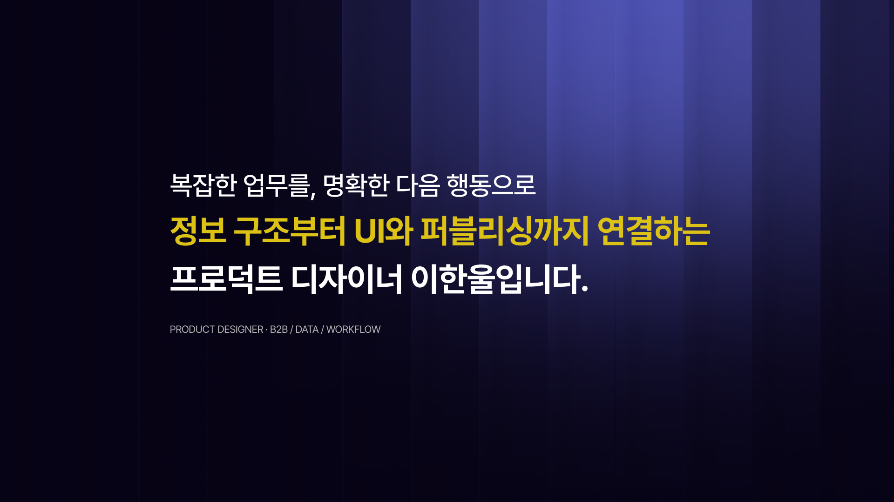

| 정확한 위치 | 할 작업 | 그 위치의 교체 문구 |
|---|---|---|
| 좌측 큰 제목 | 현재 중앙 3줄 소개 전체 교체 | 복잡한 업무 정보를 명확한 UI로 설계합니다. |
| 제목 아래 소개 | 노란색 긴 문장을 한 줄 소개로 교체 | B2B 업무 서비스의 정보 구조·UX/UI·퍼블리싱을 담당하는 디자이너 이한울입니다. |
| 좌측 하단 작은 정보 | 직무와 버전만 남김 | 이한울 · UX/UI / Product Designer B2B 업무 플랫폼 · 2026.10 |
| 우측 화면 | 추상 배경 위에 실제 화면 1장 배치 | 통합 플랫폼 · 지도와 업무별 자료 탐색 UI |
이미지·배치: 원본 01의 보라 그라데이션은 단색 밝은 배경으로 교체. 노란색 문장 강조 제거. 우측은 플랫폼 평면 화면 한 장만 사용; 표지에서는 작은 UI 문구를 읽히려 하지 않는다.
완료 기준: 이름·직무·업무 서비스 설계 경험이 5초 안에 보인다.
1920×1080 기준 좌표 보기
- 제목 아래 소개: x=120, y=360, w=690, h=150
- 좌측 하단 작은 정보: x=120, y=534, w=690, h=180
- 우측 대표 화면/보조 영역: x=870, y=350, w=930, h=560
한 모듈의 여러 문장은 같은 의미 단위다. 긴 문장은 원본 디자인에서 줄바꿈과 영역 크기를 조정한다. 배치도는 요약 예시이고 위 표가 교체 원고다.
새 02 · 소개·경력
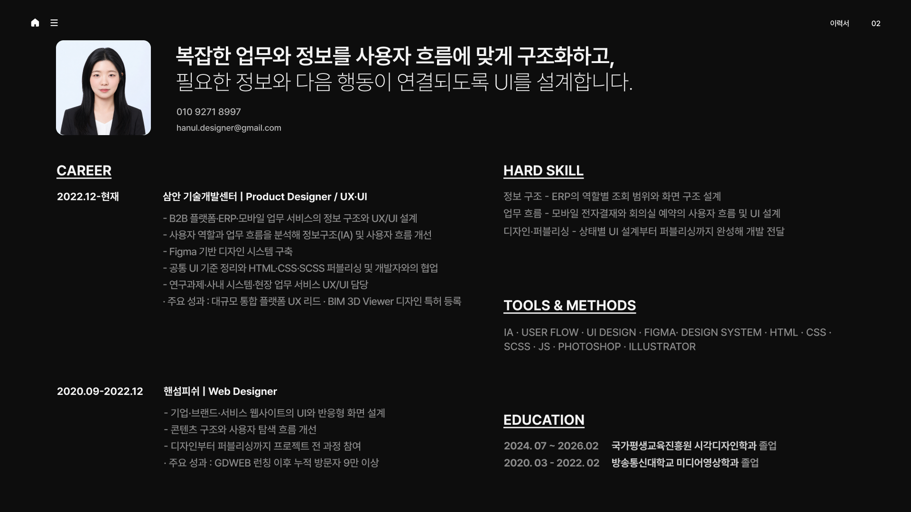
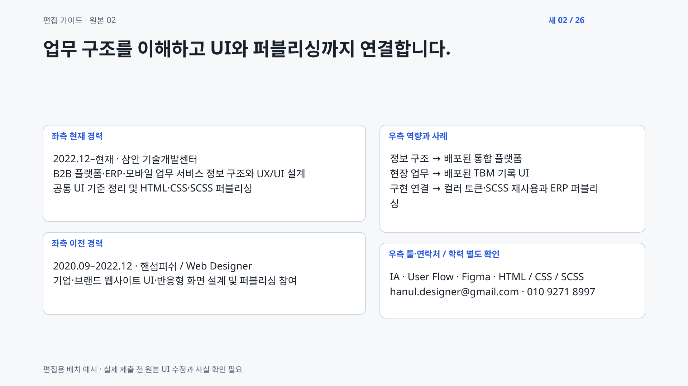
| 정확한 위치 | 할 작업 | 그 위치의 교체 문구 |
|---|---|---|
| 상단 소개 | 사진 오른쪽의 큰 2줄 소개를 1줄로 축약 | 업무 구조를 이해하고 UI와 퍼블리싱까지 연결합니다. |
| 좌측 CAREER 첫 경력 | 6개 업무 bullet을 아래 3줄로 교체 | 2022.12–현재 · 삼안 기술개발센터 B2B 플랫폼·ERP·모바일 업무 서비스 정보 구조와 UX/UI 설계 공통 UI 기준 정리 및 HTML·CSS·SCSS 퍼블리싱 |
| 좌측 CAREER 두 번째 경력 | 현재 업무 bullet을 2줄로 축약 | 2020.09–2022.12 · 핸섬피쉬 / Web Designer 기업·브랜드 웹사이트 UI·반응형 화면 설계 및 퍼블리싱 참여 |
| 우측 HARD SKILL | 툴과 중복되는 추상 항목을 사례 연결 문장으로 교체 | 정보 구조 → 배포된 통합 플랫폼 현장 업무 → 배포된 TBM 기록 UI 구현 연결 → 컬러 토큰·SCSS 재사용과 ERP 퍼블리싱 |
| 우측 하단 | 학력·연락처를 작게 묶고 툴 목록은 한 줄만 유지 | IA · User Flow · Figma · HTML / CSS / SCSS hanul.designer@gmail.com · 010 9271 8997 |
이미지·배치: 사진은 삭제하거나 120×160px로 축소. 본문 회색을 #3E454E로 진하게. 학력은 증명서상 명칭 확인 후 현재 두 항목 유지. UX 리드·특허·누적 방문자 문구는 근거 확인 전 본문에서 빼고 증빙 대기 목록으로 이동.
완료 기준: 2020년부터의 전체 디자인 경력과 2022.12부터의 UX/UI 업무를 혼동하지 않는다.
추가 확인: 삼안/한맥의 실제 관계, 학력의 정확한 명칭, 리드 책임, 특허 기여, 방문 지표 출처는 별도 확인. 확인 전 회사 관계나 숫자를 추측해 쓰지 않는다.
1920×1080 기준 좌표 보기
- 현재 경력: x=120, y=350, w=900, h=270
- 이전 경력: x=120, y=650, w=900, h=230
- 역량과 사례: x=1060, y=350, w=740, h=300
- 툴·연락처: x=1060, y=680, w=740, h=210
한 모듈의 여러 문장은 같은 의미 단위다. 긴 문장은 원본 디자인에서 줄바꿈과 영역 크기를 조정한다. 배치도는 요약 예시이고 위 표가 교체 원고다.
새 03 · 프로젝트 목차
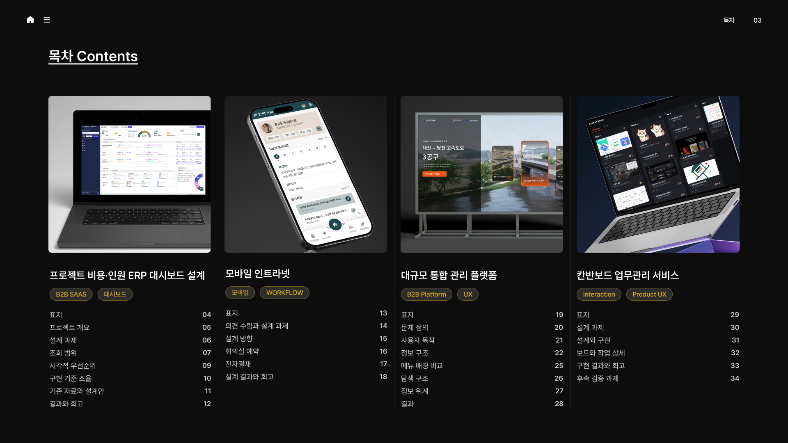
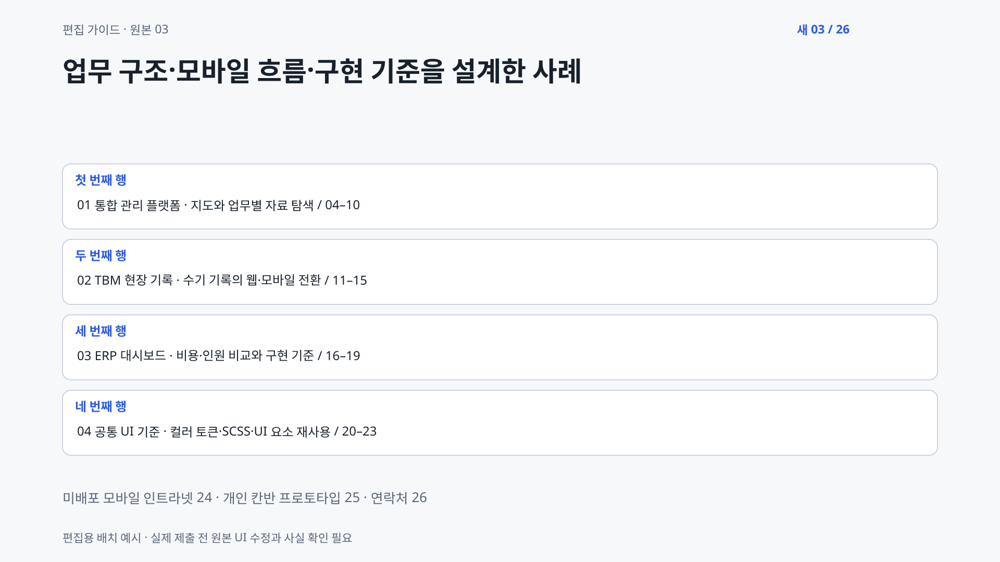
| 정확한 위치 | 할 작업 | 그 위치의 교체 문구 |
|---|---|---|
| 상단 제목 | 목차 Contents를 교체 | 업무 구조·모바일 흐름·구현 기준을 설계한 사례 |
| 첫 번째 행 | 현재 ERP 첫 번째 카드를 플랫폼으로 교체 | 01 통합 관리 플랫폼 · 지도와 업무별 자료 탐색 / 04–10 |
| 두 번째 행 | 모바일 인트라넷 대신 실제 배포된 TBM을 대표 사례로 배치 | 02 TBM 현장 기록 · 수기 기록의 웹·모바일 전환 / 11–15 |
| 세 번째 행 | ERP를 세 번째로 이동 | 03 ERP 대시보드 · 비용·인원 비교와 구현 기준 / 16–19 |
| 네 번째 행 | 칸반 큰 목차를 디자인 시스템으로 교체 | 04 공통 UI 기준 · 컬러 토큰·SCSS·UI 요소 재사용 / 20–23 |
| 하단 한 줄 | 개인/추가 경험만 짧게 표시 | 미배포 모바일 인트라넷 24 · 개인 칸반 프로토타입 25 · 연락처 26 |
이미지·배치: 기울어진 장치 목업 4개 제거. 가로 목록 4행 + 각 행 320×120px 평면 썸네일. 전체 26쪽 기준 범위만 기재. B2B SAAS 태그는 SaaS 모델 확인 전 B2B 업무 시스템으로 교체.
완료 기준: 페이지 범위가 실제 제출 PDF와 일치하고 프로젝트 차이가 문장으로 드러난다.
1920×1080 기준 좌표 보기
- 첫 번째 행: x=120, y=315, w=1680, h=125
- 두 번째 행: x=120, y=460, w=1680, h=125
- 세 번째 행: x=120, y=605, w=1680, h=125
- 네 번째 행: x=120, y=750, w=1680, h=125
한 모듈의 여러 문장은 같은 의미 단위다. 긴 문장은 원본 디자인에서 줄바꿈과 영역 크기를 조정한다. 배치도는 요약 예시이고 위 표가 교체 원고다.
새 04 · 통합 플랫폼 표지
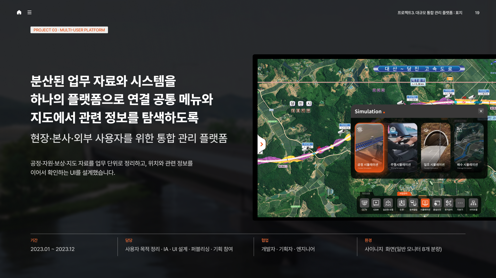

| 정확한 위치 | 할 작업 | 그 위치의 교체 문구 |
|---|---|---|
| 좌측 큰 제목 | 원본 19의 길게 이어진 큰 제목 교체 | 지도와 업무별 자료를 연결하는 통합 관리 플랫폼 |
| 제목 아래 설명 | 현재 두 문장 설명 교체 | 공정·자원·보상·현장 자료를 탐색하도록 공통 메뉴와 지도 기반 UI를 설계했습니다. |
| 좌측 하단 참여 정보 | 기간/담당/협업/환경을 4행으로 정리 | 2023.01–2023.12 담당: 사용자 목적 정리·IA·UI·퍼블리싱·기획 참여 협업: 개발자·기획자·엔지니어 상태: 배포 후 실제 사용자 사용 |
| 우측 대표 화면 | 배경 사진과 모니터 테두리 제거 | 지도 기반 탐색 UI |
이미지·배치: 우측 UI를 평면으로 보여준다. 원본의 8개 모니터 문구는 실제 배치/해상도/입력 방식 확인 후 작은 환경 캡션으로 옮긴다. 배포·실제 사용 상태는 2026-10-10 본인 설명으로 확인했다. 사용자 수나 효과 개선 수치는 추가하지 않는다.
완료 기준: 표지만 읽어도 개인 담당과 시연 활용 범위를 구분한다.
추가 확인: 팀 인원 수와 본인 최종 결정권은 확인되지 않았으므로 임의 수치·리드 표기 금지.
1920×1080 기준 좌표 보기
- 제목 아래 설명: x=120, y=360, w=690, h=150
- 좌측 하단 참여 정보: x=120, y=534, w=690, h=180
- 우측 대표 화면/보조 영역: x=870, y=350, w=930, h=560
한 모듈의 여러 문장은 같은 의미 단위다. 긴 문장은 원본 디자인에서 줄바꿈과 영역 크기를 조정한다. 배치도는 요약 예시이고 위 표가 교체 원고다.
새 05 · 플랫폼: 문제와 사용자 목적
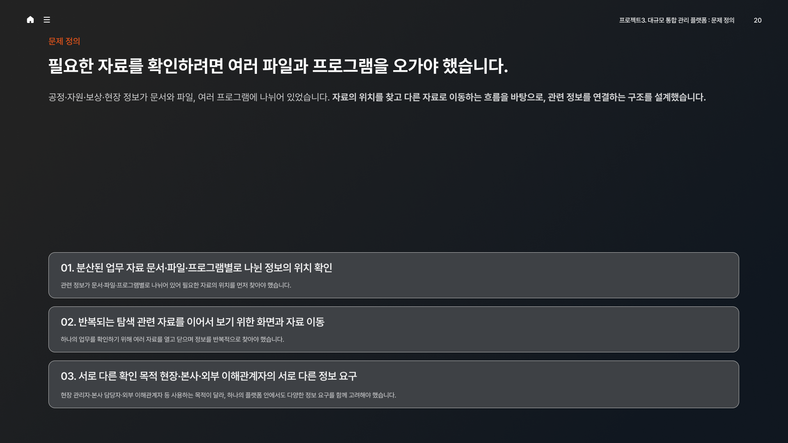
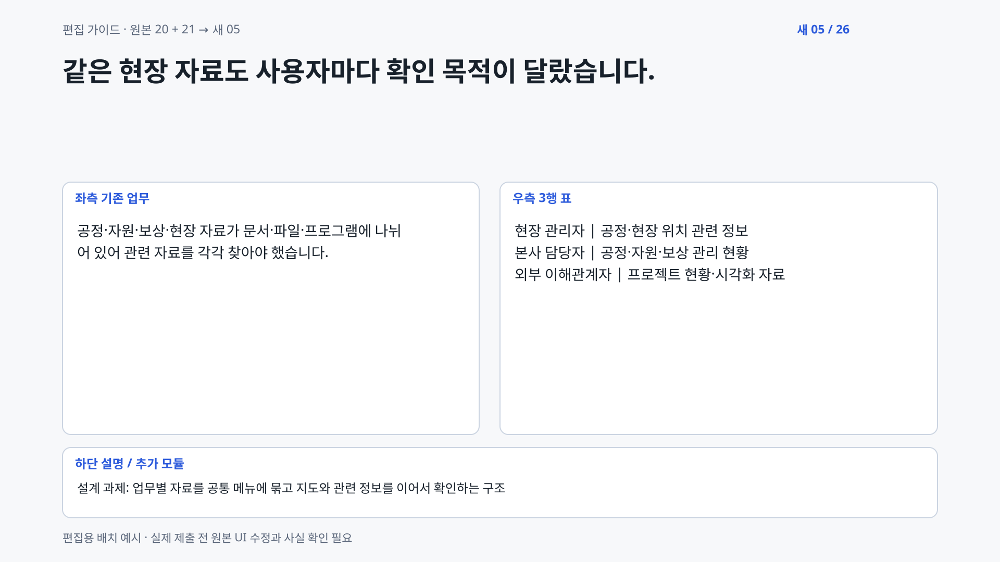
| 정확한 위치 | 할 작업 | 그 위치의 교체 문구 |
|---|---|---|
| 상단 제목 | 원본 20·21 제목을 하나로 통합 | 같은 현장 자료도 사용자마다 확인 목적이 달랐습니다. |
| 좌측 기존 업무 | 원본 20의 세 개 긴 카드 제거 | 공정·자원·보상·현장 자료가 문서·파일·프로그램에 나뉘어 있어 관련 자료를 각각 찾아야 했습니다. |
| 우측 3행 표 | 원본 21의 큰 사용자 카드 3개를 표로 교체 | 현장 관리자 | 공정·현장 위치 관련 정보 본사 담당자 | 공정·자원·보상 관리 현황 외부 이해관계자 | 프로젝트 현황·시각화 자료 |
| 하단 결정 | 문제 3개를 반복하는 문장 삭제 | 설계 과제: 업무별 자료를 공통 메뉴에 묶고 지도와 관련 정보를 이어서 확인하는 구조 |
이미지·배치: 좌측에 원본 24 파일 목록 부분을 작은 근거 이미지로 넣을 수 있다. 우측 표는 사용자/확인 목적/자료 유형 3열. 권한 차이와 역할별 맞춤 화면을 새로 만들어 넣지 않는다.
완료 기준: 자료가 많다는 설명을 넘어 누가 무엇을 확인하는지 읽힌다.
추가 확인: 실제 요구사항 문서나 당시 협의 메모가 있으면 출처 한 줄을 추가. 없으면 현재 문서에 정리된 사용자 목적이라고 표시.
1920×1080 기준 좌표 보기
- 좌측 기존 업무: x=120, y=350, w=800, h=485
- 우측 3행 표: x=960, y=350, w=840, h=485
- 하단 설명 / 추가 모듈: x=120, y=860, w=1680, h=135
한 모듈의 여러 문장은 같은 의미 단위다. 긴 문장은 원본 디자인에서 줄바꿈과 영역 크기를 조정한다. 배치도는 요약 예시이고 위 표가 교체 원고다.
새 06 · 플랫폼: 정보 구조
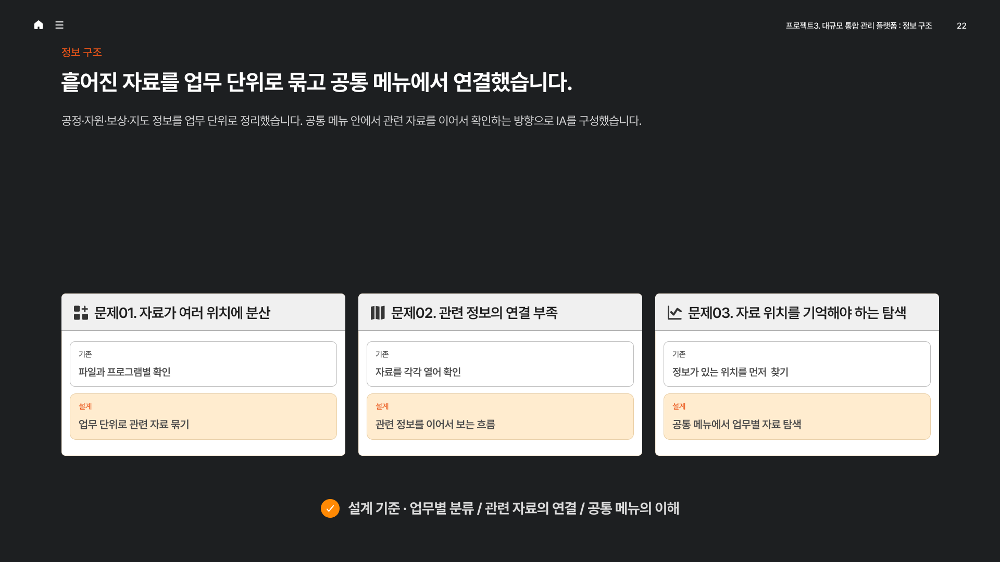

| 정확한 위치 | 할 작업 | 그 위치의 교체 문구 |
|---|---|---|
| 상단 제목 | 흩어진 자료를… 제목 교체 | 공통 메뉴에서 업무별 자료를 찾도록 분류했습니다. |
| 좌측 구조 도식 | 원본 22 문제/대응 카드 3개 모두 제거 | 공통 메뉴 현장설명 / 사업관리 CCTV · GSIM · 실감형 모델 · 도면 · 원격협업 시뮬레이션 · 품질안전 · 유지관리 · 더보기 · 사이트맵 |
| 우측 실제 메뉴 확대 | 원본 26 Before/After 텍스트 카드 제거 | 화면에서 확인되는 메뉴명과 순서를 도식에 대응 |
| 하단 설명 | 담당 설계 범위는 한 줄로 축약 | 담당: 업무별 자료 분류, 공통 메뉴의 정보 구조, 지도와 관련 정보의 탐색 UI |
이미지·배치: 도식의 1차 탭은 현장설명/사업관리, 기능은 실제 선택 화면에 보이는 목록으로 나란히 제시. 탭별 소속을 모르면 두 탭 아래에 기능을 임의로 배분하지 말고 “사업관리 선택 화면의 표시 기능”으로 연결. 원본 전체 22를 재사용하지 않는다.
완료 기준: 도식의 모든 메뉴명이 화면 캡처에서 확인된다.
추가 확인: 하위 메뉴 관계는 원본 파일 확인 필요. 확인되지 않는 권한·관리자 메뉴·기능 계층은 제외.
1920×1080 기준 좌표 보기
- 실제 메뉴 분류: x=120, y=350, w=800, h=485
- 실제 메뉴 부분 확대: x=960, y=350, w=840, h=485
- 담당 범위: x=120, y=860, w=1680, h=135
한 모듈의 여러 문장은 같은 의미 단위다. 긴 문장은 원본 디자인에서 줄바꿈과 영역 크기를 조정한다. 배치도는 요약 예시이고 위 표가 교체 원고다.
새 07 · 플랫폼: 탐색 흐름
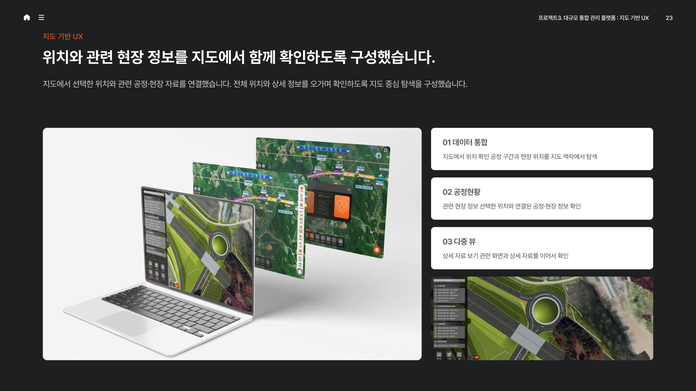

| 정확한 위치 | 할 작업 | 그 위치의 교체 문구 |
|---|---|---|
| 상단 제목 | 위치와 관련 현장 정보를… 제목 교체 | 지도와 관련 자료를 이어서 확인하도록 구성했습니다. |
| 좌측 큰 화면 | 원본 23 노트북+겹친 화면, 27 기울어진 화면 제거 | ① 지도에서 현장 위치 확인 ② 업무 메뉴 선택 ③ 관련 자료 목록 확인 |
| 우측 설명 ① | 현재 상태라는 넓은 항목명 교체 | 지도: 공정 구간과 현장 위치를 확인하는 배경 |
| 우측 설명 ② | 주요 정보 카드 교체 | 메뉴: 시뮬레이션 등 관련 자료의 진입점 |
| 우측 설명 ③ | 상세 정보 카드 교체 | 자료 목록: 선택한 업무의 하위 자료를 확인 |
이미지·배치: UI 한 장을 가로 1120px로 확대하고 번호를 지도, 하단 메뉴, 중앙 Simulation 목록에 표시. 캡처로 확인되는 화면 구성 설명이다. 위치를 클릭하면 자동 필터되는 기능은 실제 동작 확인 후에만 적는다. 목록 이후 자료 상세가 있으면 작은 보조 캡처 1장 추가.
완료 기준: 번호의 대상 요소가 실제 화면에 있고 클릭 동작과 설명을 섞지 않는다.
추가 확인: 위치 선택과 자료 필터 연동은 캡처만으로 확인되지 않는다. 확인 전 제목을 “위치 선택으로 자동 연결”로 강화하지 않는다.
1920×1080 기준 좌표 보기
- 좌측 큰 화면: x=120, y=335, w=1100, h=580
- 우측 설명 ①: x=1260, y=335, w=540, h=175
- 우측 설명 ②: x=1260, y=530, w=540, h=175
- 우측 설명 ③: x=1260, y=725, w=540, h=175
한 모듈의 여러 문장은 같은 의미 단위다. 긴 문장은 원본 디자인에서 줄바꿈과 영역 크기를 조정한다. 배치도는 요약 예시이고 위 표가 교체 원고다.
새 08 · 플랫폼: 메뉴 대안 선택
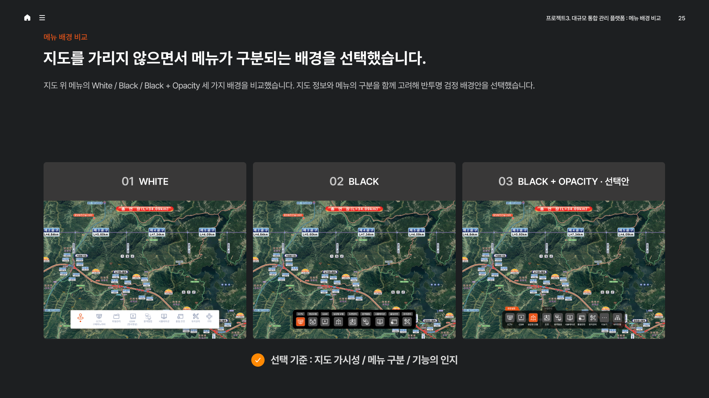

| 정확한 위치 | 할 작업 | 그 위치의 교체 문구 |
|---|---|---|
| 상단 제목 | 지도를 가리지 않으면서… 제목 교체 | 지도와 메뉴의 구분을 고려해 반투명 검정안을 선택했습니다. |
| 제목 아래 본문 | 배경만 비교했다는 문장 수정 | 흰색·검정·반투명 검정 배경과 메뉴 구성의 대안을 비교했습니다. |
| 좌측 대안 A 아래 캡션 | WHITE 이름 아래 판단 근거 추가 | A 흰색 | 메뉴가 지도와 분리되어 보이는 안 |
| 중앙 대안 B 아래 캡션 | BLACK 이름 아래 판단 근거 추가 | B 검정 | 메뉴 영역의 존재감이 강한 안 |
| 우측 선택 C 아래 캡션 | 선택안만 테두리 강조 | C 반투명 검정 | 메뉴를 구분하면서 지도 배경의 시각적 연속성을 고려한 선택 |
| 하단 작은 주석 | 절대 표현 대신 비교 조건 명시 | 당시 대안은 메뉴 구성과 선택 상태도 다릅니다. 통제 실험이나 정량 가독성 평가 결과가 아닙니다. |
이미지·배치: 원본 25의 각 화면 사각형만 사용: A=(118,546,549,374), B=(685,546,549,374), C=(1252,546,549,374). 1920×1080 원본 기준 x,y,w,h. 각 화면을 동일 크기로 놓고 하단 메뉴 부분을 추가 확대. 역사적 대안을 보존하고 새로 통일한 비교는 “2026.10 설명용 재구성”으로 별도 표기.
완료 기준: 선택 기준이 화면의 메뉴 영역과 연결되고 통제된 실험으로 오해되지 않는다.
1920×1080 기준 좌표 보기
- 좌측 대안 A 아래 캡션: x=120, y=350, w=540, h=545
- 중앙 대안 B 아래 캡션: x=690, y=350, w=540, h=545
- 우측 선택 C 아래 캡션: x=1260, y=350, w=540, h=545
한 모듈의 여러 문장은 같은 의미 단위다. 긴 문장은 원본 디자인에서 줄바꿈과 영역 크기를 조정한다. 배치도는 요약 예시이고 위 표가 교체 원고다.
새 09 · 플랫폼: 자료와 UI의 대응
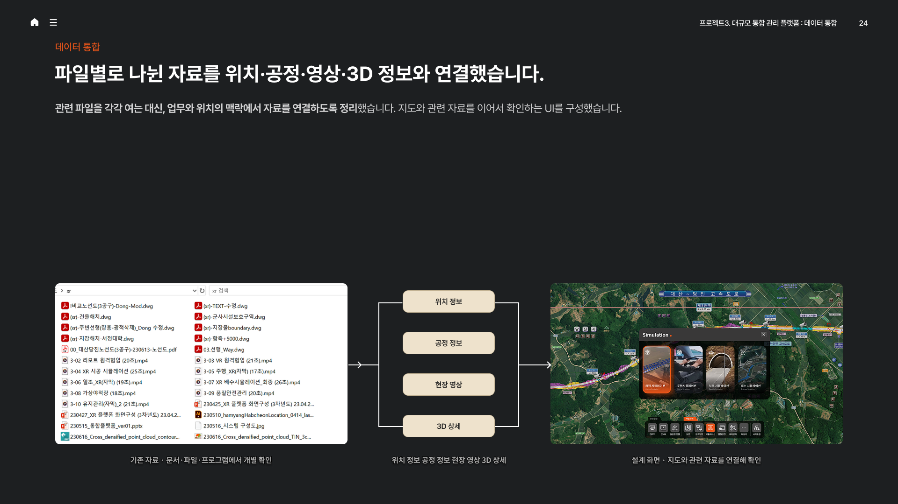

| 정확한 위치 | 할 작업 | 그 위치의 교체 문구 |
|---|---|---|
| 상단 제목 | 파일별로 나뉜 자료를… 제목 교체 | 위치·공정·영상·3D 자료를 확인하는 UI를 구성했습니다. |
| 좌측 파일 자료 | 작은 탐색기 캡처를 대표 파일 2–3개로 확대 | 자료 유형 예시: 위치 정보·도면·영상·3D 자료 |
| 중앙 대응 설명 | 4개 추상 카드 대신 실제 대응 표 | 자료 유형 → 관련 메뉴 → 확인 화면 영상 → CCTV → 영상 자료 도면 → 도면 → 도면 자료 시뮬레이션 → 시뮬레이션 → 자료 목록 |
| 우측 실제 화면 | 작은 전체 화면을 한 장 크게 교체 | 지도와 관련 자료를 이어서 확인하는 화면 |
| 하단 담당 | 데이터 통합 제목의 넓은 책임을 제한 | 본인 담당: 정보 구조·UI·퍼블리싱. 데이터 변환·API 연동·3D 제작은 실제 담당 범위와 구분합니다. |
이미지·배치: 파일과 화면이 같은 현장인지 확인. 같지 않으면 “대표 자료 유형 예시”로 캡션. 표의 세 대응은 관련 기능의 설명용 요약이며 정확한 파일–메뉴 매핑 확인 후 제출. 실제 메뉴에 없는 자료를 추가하지 않는다.
완료 기준: 파일 목록과 UI가 왜 함께 있는지 이해되고 기술 데이터 통합의 본인 수행으로 읽히지 않는다.
추가 확인: 같은 현장의 대응 자료가 없으면 파일 전후 비교를 삭제하고 메뉴별 자료 유형 도식으로 대체.
1920×1080 기준 좌표 보기
- 좌측 파일 자료: x=120, y=350, w=800, h=485
- 우측 실제 화면: x=960, y=350, w=840, h=485
- 하단 설명 / 추가 모듈: x=120, y=860, w=1680, h=135
한 모듈의 여러 문장은 같은 의미 단위다. 긴 문장은 원본 디자인에서 줄바꿈과 영역 크기를 조정한다. 배치도는 요약 예시이고 위 표가 교체 원고다.
새 10 · 플랫폼: 결과와 협업
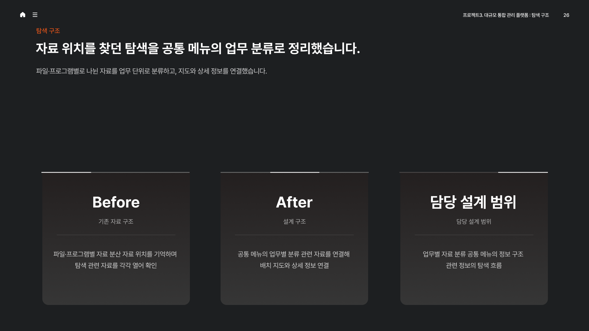
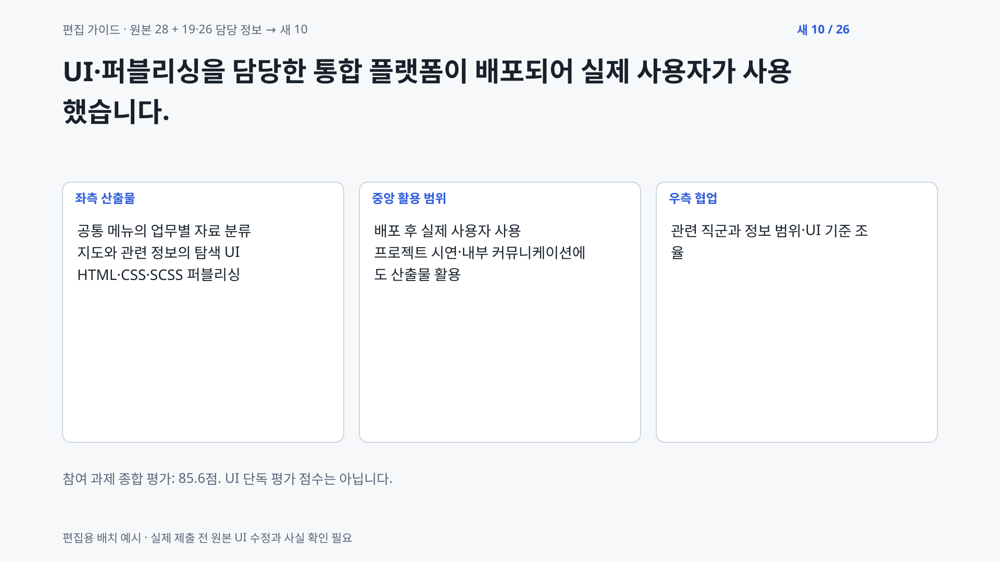
| 정확한 위치 | 할 작업 | 그 위치의 교체 문구 |
|---|---|---|
| 상단 제목 | 참여한 과제 평가에서 85.6점… 큰 제목 교체 | UI·퍼블리싱을 담당한 통합 플랫폼이 배포되어 실제 사용자가 사용했습니다. |
| 좌측 산출물 | 현재 4개 카드 중 담당 기여를 첫 항목으로 이동 | 공통 메뉴의 업무별 자료 분류 지도와 관련 정보의 탐색 UI HTML·CSS·SCSS 퍼블리싱 |
| 중앙 활용 범위 | 산출물 활용 카드를 두 번째로 이동 | 배포 후 실제 사용자 사용 프로젝트 시연·내부 커뮤니케이션에도 산출물 활용 |
| 우측 협업 | 추상 협업 카드를 실제 기록 한 건으로 바꿀 자리 | 관련 직군과 정보 범위·UI 기준 조율 |
| 하단 주석 | 점수 카드를 본문보다 작게 이동 | 참여 과제 종합 평가: 85.6점. UI 단독 평가 점수는 아닙니다. |
이미지·배치: 85.6점을 화면 최대 타이포로 쓰지 않는다. 원자료 확인 전 점수/최고점은 제출본에서 제외. 당시 피드백/요구사항/변경 내역 중 한 건을 우측에 넣되 없으면 확인된 협업 범위만 남긴다.
완료 기준: 배포·실제 사용과 개인 담당 범위를 연결하고 사용자 수/효과 수치를 만들지 않는다.
추가 확인: 배포·사용 여부는 본인 설명으로 확인. 배포 시점·사용 범위·제품명, 점수 출처와 실제 협의 변경 한 건은 남은 보강 항목. 기억나지 않는 피드백을 인용으로 만들지 않는다.
1920×1080 기준 좌표 보기
- 좌측 산출물: x=120, y=350, w=540, h=500
- 중앙 활용 범위: x=690, y=350, w=540, h=500
- 우측 협업: x=1260, y=350, w=540, h=500
한 모듈의 여러 문장은 같은 의미 단위다. 긴 문장은 원본 디자인에서 줄바꿈과 영역 크기를 조정한다. 배치도는 요약 예시이고 위 표가 교체 원고다.
새 11 · TBM 표지
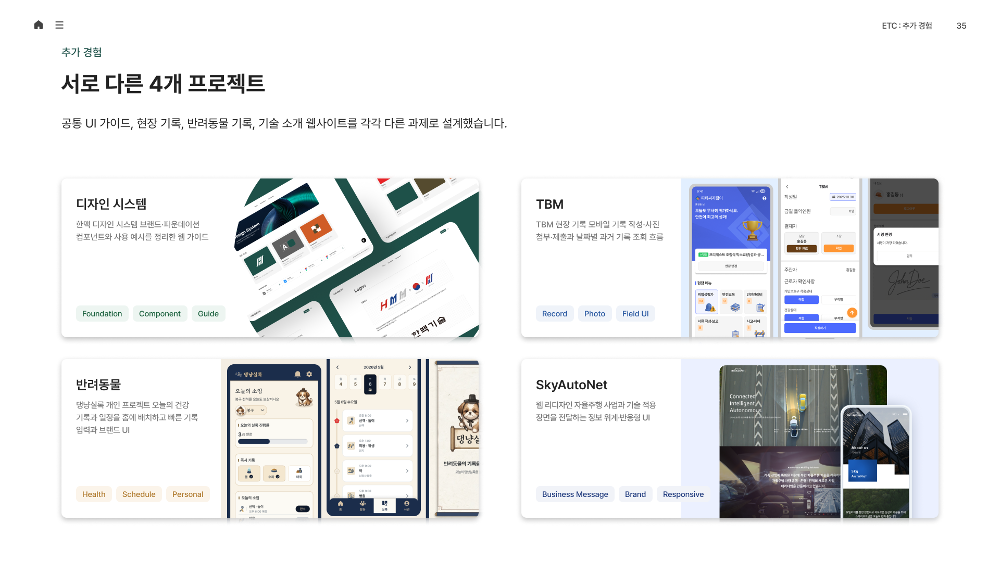
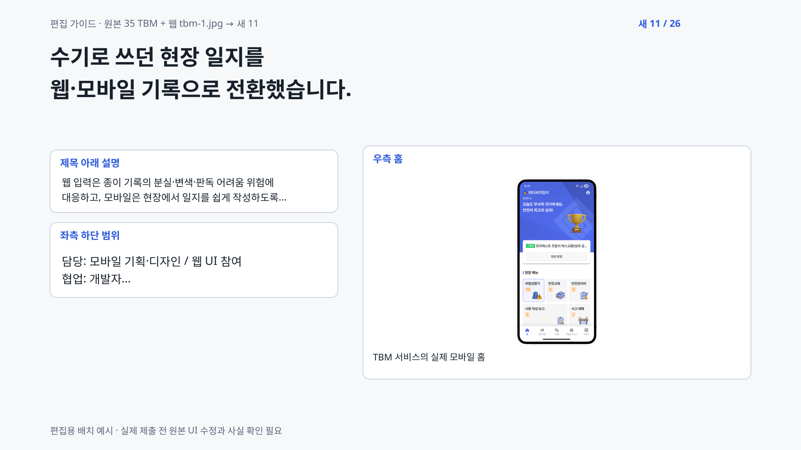
| 정확한 위치 | 할 작업 | 그 위치의 교체 문구 |
|---|---|---|
| 좌측 큰 제목 | 원본 35 작은 TBM 카드를 독립 표지로 확대 | 수기로 쓰던 현장 일지를 웹·모바일 기록으로 전환했습니다. |
| 제목 아래 설명 | 장갑/햇빛 효과보다 실제 목적을 먼저 설명 | 웹 입력은 종이 기록의 분실·변색·판독 어려움 위험에 대응하고, 모바일은 현장에서 일지를 쉽게 작성하도록 설계했습니다. |
| 좌측 하단 범위 | 웹 표지에서 역할만 가져와 상태 추가 | 담당: 모바일 기획·디자인 / 웹 UI 참여 협업: 개발자 상태: 배포 후 실제 사용자 사용 기간: 웹 자료 2025.11 시작, 실제 범위 확인 후 확정 |
| 우측 홈 | 기존 TBM 폰 목업 대신 실제 홈을 평면으로 배치 | TBM 서비스의 실제 모바일 홈 |
이미지·배치: tbm-1.jpg의 배경·아이폰 목업·#Zero-to-Scale·디자인 100%는 가져오지 않는다. 표지에 “배포·실제 사용”을 넣는다. 기간은 tbm-1의 2025.11–2026.04와 웹의 시작 표기 중 실제 작업 범위로 확정한다.
완료 기준: 수기 기록 문제, 모바일 목적, 본인 역할, 배포 여부가 첫 페이지에 보인다.
추가 확인: 정확한 웹/모바일 담당과 작업 기간, 사용자 범위 확인. 다른 회사 확장·90% 개선 수치는 기존 자료에 있어도 근거 확인 전 제외.
1920×1080 기준 좌표 보기
- 제목 아래 설명: x=120, y=360, w=690, h=150
- 좌측 하단 범위: x=120, y=534, w=690, h=180
- 우측 대표 화면/보조 영역: x=870, y=350, w=930, h=560
한 모듈의 여러 문장은 같은 의미 단위다. 긴 문장은 원본 디자인에서 줄바꿈과 영역 크기를 조정한다. 배치도는 요약 예시이고 위 표가 교체 원고다.
새 12 · TBM: 수기 기록의 문제
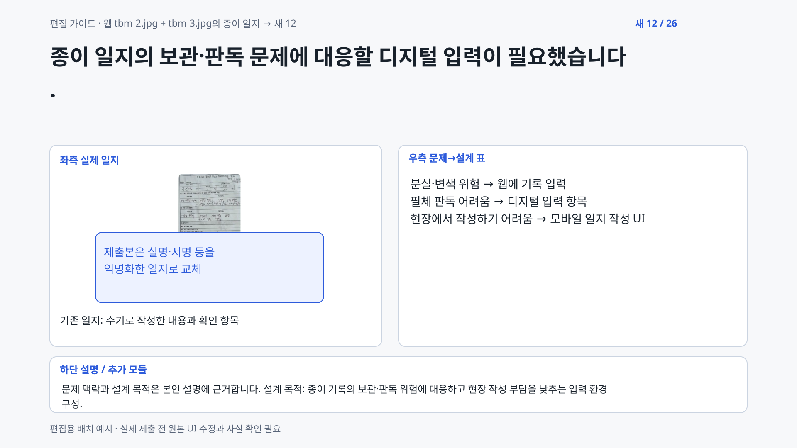
| 정확한 위치 | 할 작업 | 그 위치의 교체 문구 |
|---|---|---|
| 상단 제목 | 웹의 추상 “기록 UX의 본질” 제목 교체 | 종이 일지의 보관·판독 문제에 대응할 디지털 입력이 필요했습니다. |
| 좌측 실제 일지 | tbm-3.jpg의 종이 일지 부분만 확대 | 기존 일지: 수기로 작성한 내용과 확인 항목 |
| 우측 문제→설계 표 | tbm-2의 4개 아이콘 카드 대신 구체적인 대응 | 분실·변색 위험 → 웹에 기록 입력 필체 판독 어려움 → 디지털 입력 항목 현장에서 작성하기 어려움 → 모바일 일지 작성 UI |
| 하단 근거 | 리서치 수치를 새로 넣지 않음 | 문제 맥락과 설계 목적은 본인 설명에 근거합니다. 설계 목적: 종이 기록의 보관·판독 위험에 대응하고 현장 작성 부담을 낮추는 입력 환경 구성. |
이미지·배치: 종이 일지는 tbm-3.jpg의 (88,214,247,503), 1440×810 원본 기준. 실명·서명·현장명은 의미를 유지한 익명화 예시로 교체. 웹 입력 화면을 확보하면 종이→웹→모바일로 3열. 없으면 웹 화면이 있었던 것처럼 새로 그리지 않고 역할 표와 모바일 자료를 제시.
완료 기준: 웹 입력과 모바일 작성의 목적 차이가 읽히고 법적 리스크·효율 개선을 단정하지 않는다.
추가 확인: 사용자 피드백은 개발자를 통해 전달됐지만 구체 내용은 기억나지 않는 상태. 직접 인터뷰/인용·발언 수를 추가하지 않는다.
1920×1080 기준 좌표 보기
- 좌측 실제 일지: x=120, y=350, w=800, h=485
- 우측 문제→설계 표: x=960, y=350, w=840, h=485
- 하단 설명 / 추가 모듈: x=120, y=860, w=1680, h=135
한 모듈의 여러 문장은 같은 의미 단위다. 긴 문장은 원본 디자인에서 줄바꿈과 영역 크기를 조정한다. 배치도는 요약 예시이고 위 표가 교체 원고다.
새 13 · TBM: 모바일 일지 작성
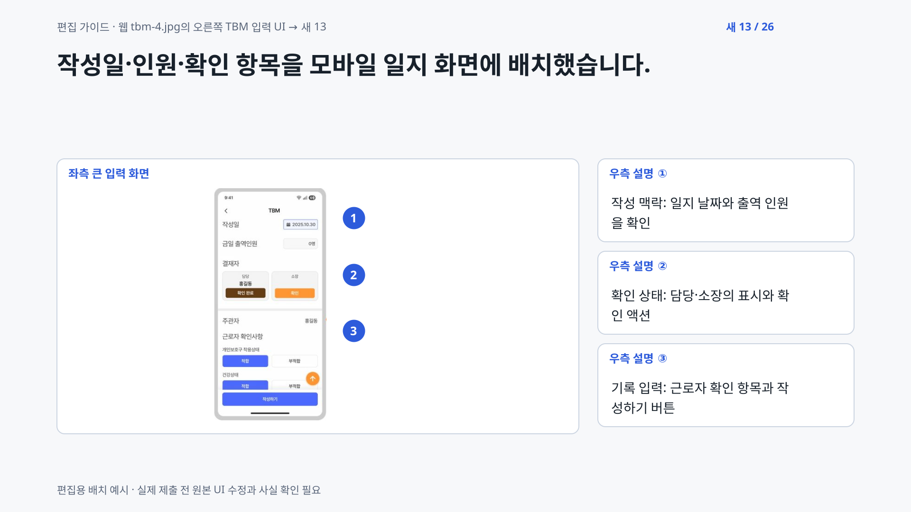
| 정확한 위치 | 할 작업 | 그 위치의 교체 문구 |
|---|---|---|
| 상단 제목 | 웹의 고명암비 비주얼 제목 교체 | 작성일·인원·확인 항목을 모바일 일지 화면에 배치했습니다. |
| 좌측 큰 입력 화면 | 로그인 화면을 빼고 TBM 폼만 확대 | ① 작성일·금일 출역 인원 ② 담당·소장의 확인 상태 ③ 근로자 확인 항목과 작성 진입 |
| 우측 설명 ① | 추상 가시성 설명을 실제 입력 요소로 교체 | 작성 맥락: 일지 날짜와 출역 인원을 확인 |
| 우측 설명 ② | 확인 상태를 실제 화면에 대응 | 확인 상태: 담당·소장의 표시와 확인 액션 |
| 우측 설명 ③ | 입력/작성 버튼을 실제 요소로 설명 | 기록 입력: 근로자 확인 항목과 작성하기 버튼 |
이미지·배치: tbm-4.jpg에서 오른쪽 폰 UI만 추출: (389,213,243,503), 1440×810 기준. 가장 아래까지 보여주되 폼 내용이 길면 필수 항목과 작성 버튼을 별도 부분 확대. 장갑 오조작·햇빛 사용성·48px 효과는 측정/규격 확인 전 성과로 적지 않는다.
완료 기준: 현재 보이는 필드/상태/버튼만 설명하고 완료 후 저장 흐름은 실제 확인 후 추가한다.
추가 확인: 작성하기 이후 화면, 저장/제출/누락 오류 화면이 있으면 원본에서 추가. 계획 상태를 과거 배포 기능으로 끼워 넣지 않는다.
1920×1080 기준 좌표 보기
- 좌측 큰 입력 화면: x=120, y=335, w=1100, h=580
- 우측 설명 ①: x=1260, y=335, w=540, h=175
- 우측 설명 ②: x=1260, y=530, w=540, h=175
- 우측 설명 ③: x=1260, y=725, w=540, h=175
한 모듈의 여러 문장은 같은 의미 단위다. 긴 문장은 원본 디자인에서 줄바꿈과 영역 크기를 조정한다. 배치도는 요약 예시이고 위 표가 교체 원고다.
새 14 · TBM: 서명과 저장 상태
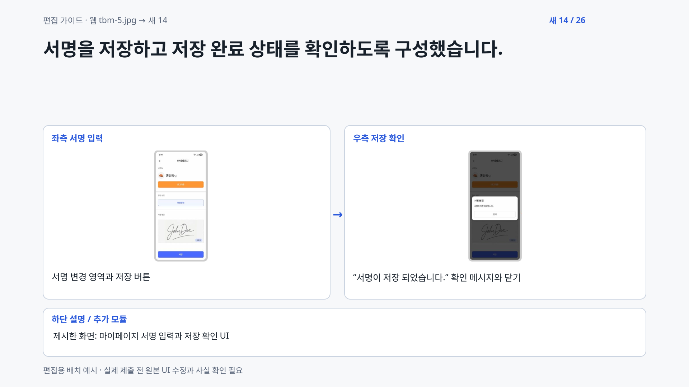
| 정확한 위치 | 할 작업 | 그 위치의 교체 문구 |
|---|---|---|
| 상단 제목 | 완결형 전자서명·디지털 프로세스 혁신 제목 교체 | 서명을 저장하고 저장 완료 상태를 확인하도록 구성했습니다. |
| 좌측 서명 입력 | tbm-5의 왼쪽 실제 UI 부분만 확대 | 서명 변경 영역과 저장 버튼 |
| 우측 저장 확인 | tbm-5의 오른쪽 실제 UI 부분만 확대 | “서명이 저장 되었습니다.” 확인 메시지와 닫기 |
| 하단 확인 범위 | 스캔/팩스 절감 효과 대신 실제 UI 동작 범위 | 제시한 화면: 마이페이지 서명 입력과 저장 확인 UI |
이미지·배치: tbm-5.jpg의 왼쪽 (88,213,244,503), 오른쪽 (389,213,243,503), 1440×810 기준. 두 화면을 동일 크기로 배치하고 저장 버튼→완료 메시지를 화살표로 연결. 이 화면은 마이페이지의 서명 저장이며, 일지 전체 제출·결재 완료 화면으로 부르지 않는다.
완료 기준: 서명 저장과 TBM 일지 제출/승인 완료가 구분된다.
추가 확인: 웹/모바일 서버 동기화·다른 회사 적용은 실제 구현과 본인 담당을 확인한 경우만 별도로 추가.
1920×1080 기준 좌표 보기
- 좌측 서명 입력: x=120, y=350, w=800, h=485
- 우측 저장 확인: x=960, y=350, w=840, h=485
- 하단 설명 / 추가 모듈: x=120, y=860, w=1680, h=135
한 모듈의 여러 문장은 같은 의미 단위다. 긴 문장은 원본 디자인에서 줄바꿈과 영역 크기를 조정한다. 배치도는 요약 예시이고 위 표가 교체 원고다.
새 15 · TBM: 배포 결과와 협업
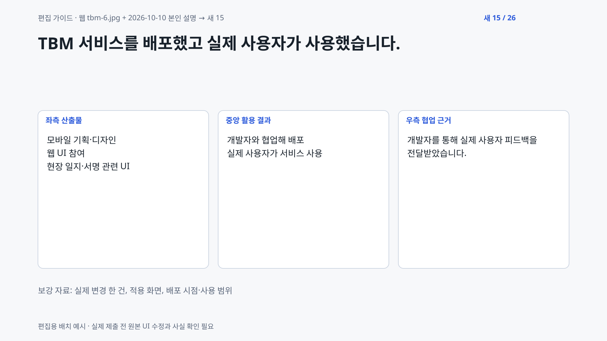
| 정확한 위치 | 할 작업 | 그 위치의 교체 문구 |
|---|---|---|
| 상단 제목 | 업무 효율/확장성 증명 제목 교체 | TBM 서비스를 배포했고 실제 사용자가 사용했습니다. |
| 좌측 산출물 | 기존 성과 도식 대신 개인 담당 | 모바일 기획·디자인 웹 UI 참여 현장 일지·서명 관련 UI |
| 중앙 활용 결과 | 배포 상태를 분명하게 추가 | 개발자와 협업해 배포 실제 사용자가 서비스 사용 |
| 우측 협업 근거 | 사용자 발언을 추측해 넣지 않음 | 개발자를 통해 실제 사용자 피드백을 전달받았습니다. |
| 하단 보강 | 90%·2–3일 개선 등 확인 안 된 숫자 제외 | 보강 자료: 실제 변경 한 건, 적용 화면, 배포 시점·사용 범위 |
이미지·배치: tbm-6.jpg 전체는 사용하지 않는다. 90% 절감·2–3일→실시간·완전 종이 없는 환경·두 번째 회사 확장은 확인 전 삭제. 피드백의 존재는 설명 가능하나 내용을 지어내지 않는다. 개발 협의 1건을 복원하면 오른쪽에 당시 요청→변경 요소→적용 화면으로 교체.
완료 기준: 배포·실제 사용을 보여주면서 업무 효율/판독 위험 감소량을 새로 주장하지 않는다.
추가 확인: 배포 시점·사용 범위와 당시 협의 자료를 찾아본다. 기억을 찾지 못해도 배포 실무 사실과 실제 UI만으로 결과 페이지를 구성한다.
1920×1080 기준 좌표 보기
- 좌측 산출물: x=120, y=350, w=540, h=500
- 중앙 활용 결과: x=690, y=350, w=540, h=500
- 우측 협업 근거: x=1260, y=350, w=540, h=500
한 모듈의 여러 문장은 같은 의미 단위다. 긴 문장은 원본 디자인에서 줄바꿈과 영역 크기를 조정한다. 배치도는 요약 예시이고 위 표가 교체 원고다.
새 16 · ERP 표지
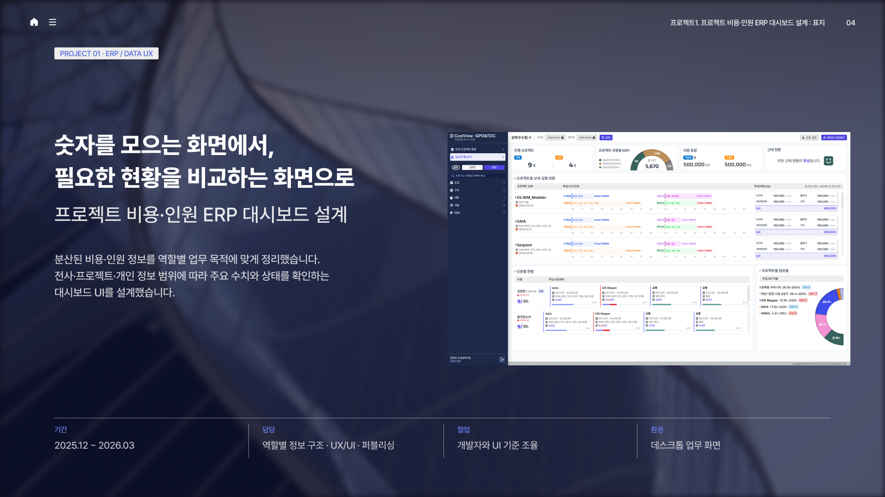
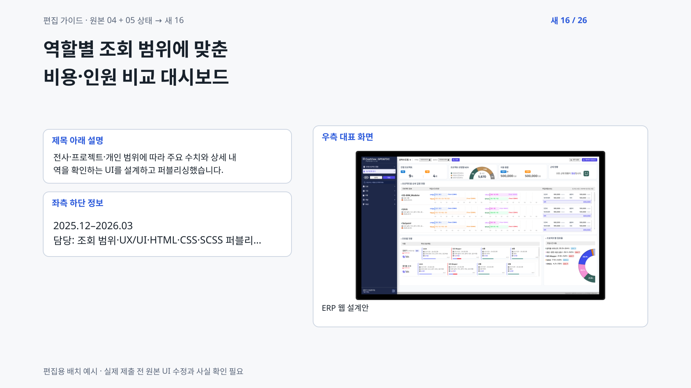
| 정확한 위치 | 할 작업 | 그 위치의 교체 문구 |
|---|---|---|
| 좌측 큰 제목 | 숫자를 모으는 화면에서… 제목 교체 | 역할별 조회 범위에 맞춘 비용·인원 비교 대시보드 |
| 제목 아래 설명 | 현재 설명 축약 | 전사·프로젝트·개인 범위에 따라 주요 수치와 상세 내역을 확인하는 UI를 설계하고 퍼블리싱했습니다. |
| 좌측 하단 정보 | 현재 정보에 상태 한 줄 추가 | 2025.12–2026.03 담당: 조회 범위·UX/UI·HTML·CSS·SCSS 퍼블리싱 협업: 개발자 상태: 제공 형식 변경으로 웹 설계안 최종 미사용 |
| 우측 대표 화면 | 배경 사진과 장치 연출 제거 | ERP 웹 설계안 |
이미지·배치: 최종 미사용 상태를 보이는 본문 크기로 적고 작은 각주로 숨기지 않는다. ERP SaaS 여부 미확인: B2B 업무 시스템으로 소개.
완료 기준: 실무 설계/구현 경험과 실제 운영 효과를 혼동하지 않는다.
1920×1080 기준 좌표 보기
- 제목 아래 설명: x=120, y=360, w=690, h=150
- 좌측 하단 정보: x=120, y=534, w=690, h=180
- 우측 대표 화면/보조 영역: x=870, y=350, w=930, h=560
한 모듈의 여러 문장은 같은 의미 단위다. 긴 문장은 원본 디자인에서 줄바꿈과 영역 크기를 조정한다. 배치도는 요약 예시이고 위 표가 교체 원고다.
새 17 · ERP: 기존 자료와 설계안
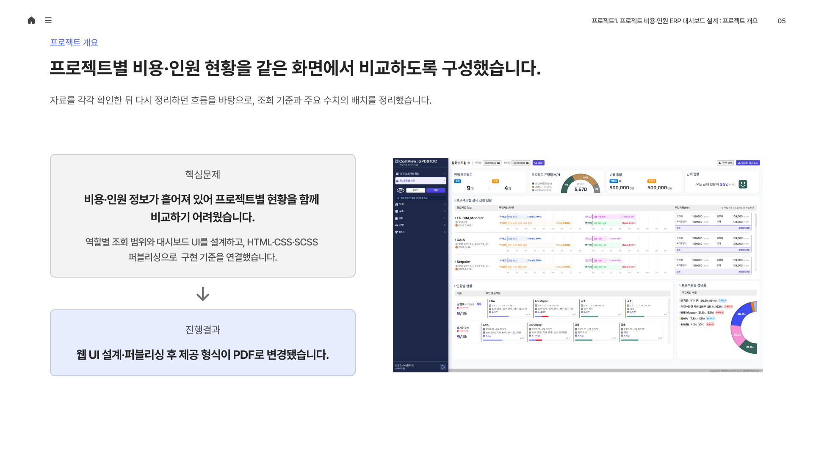
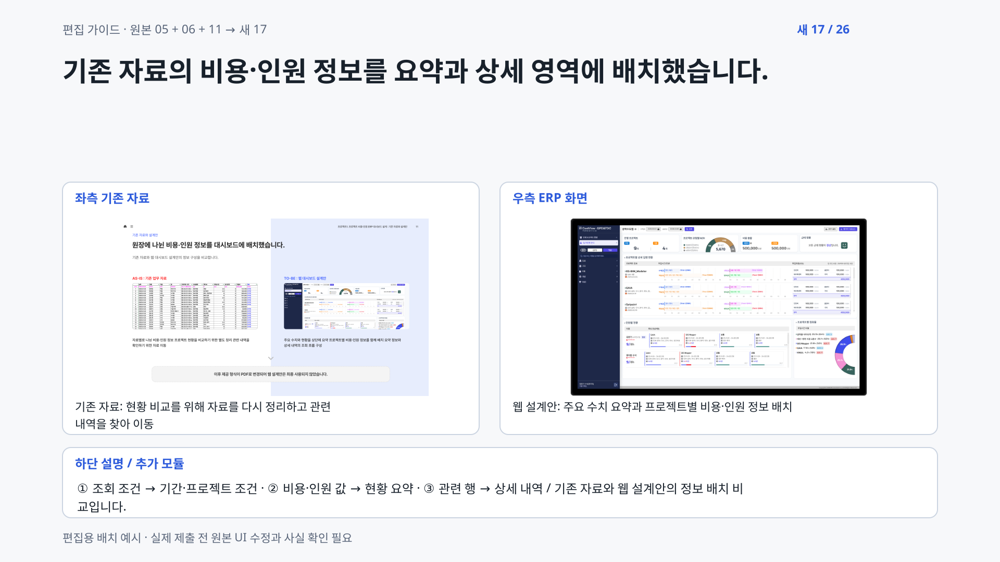
| 정확한 위치 | 할 작업 | 그 위치의 교체 문구 |
|---|---|---|
| 상단 제목 | 원장에 나뉜… 제목 교체 | 기존 자료의 비용·인원 정보를 요약과 상세 영역에 배치했습니다. |
| 좌측 기존 자료 | 원본 11 원장을 큰 근거 이미지로 사용 | 기존 자료: 현황 비교를 위해 자료를 다시 정리하고 관련 내역을 찾아 이동 |
| 우측 ERP 화면 | 원본 05·11의 중복 전체 화면 중 1장만 사용 | 웹 설계안: 주요 수치 요약과 프로젝트별 비용·인원 정보 배치 |
| 두 화면 사이 번호 | 원본 06의 3개 긴 카드 대신 번호 대응 | ① 조회 조건 → 기간·프로젝트 조건 ② 비용·인원 값 → 현황 요약 ③ 관련 행 → 상세 내역 |
| 하단 작은 주석 | 진행 결과 반복 제거 | 기존 자료와 웹 설계안의 정보 배치 비교입니다. |
이미지·배치: 원본 11 기존 자료=(118,398,755,280) 사용 가능하나 수치/이름을 의미 유지한 예시로 익명화. 전체 표보다 비용·인원 열 3–4개를 확대. 새 번호는 원자료와 설계안에서 정말 대응하는 데이터만 연결.
완료 기준: 같은 정보가 어느 영역으로 이동했는지 보이고 실제 운영 전후 성과로 읽히지 않는다.
추가 확인: 원자료–UI 데이터가 동일하지 않으면 “정보 유형의 배치 대응”이라고 표시하고 값의 일치나 직접 변환을 주장하지 않는다.
1920×1080 기준 좌표 보기
- 좌측 기존 자료: x=120, y=350, w=800, h=485
- 우측 ERP 화면: x=960, y=350, w=840, h=485
- 하단 설명 / 추가 모듈: x=120, y=860, w=1680, h=135
한 모듈의 여러 문장은 같은 의미 단위다. 긴 문장은 원본 디자인에서 줄바꿈과 영역 크기를 조정한다. 배치도는 요약 예시이고 위 표가 교체 원고다.
새 18 · ERP: 조회 범위와 흐름
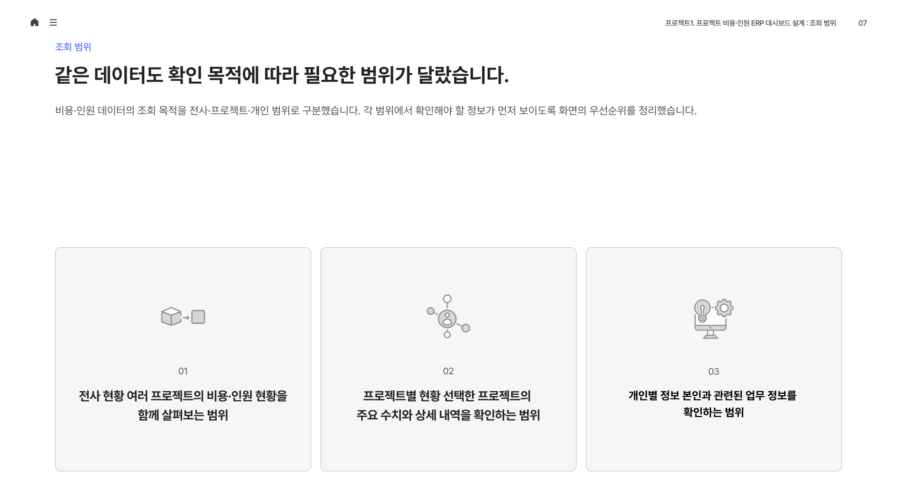
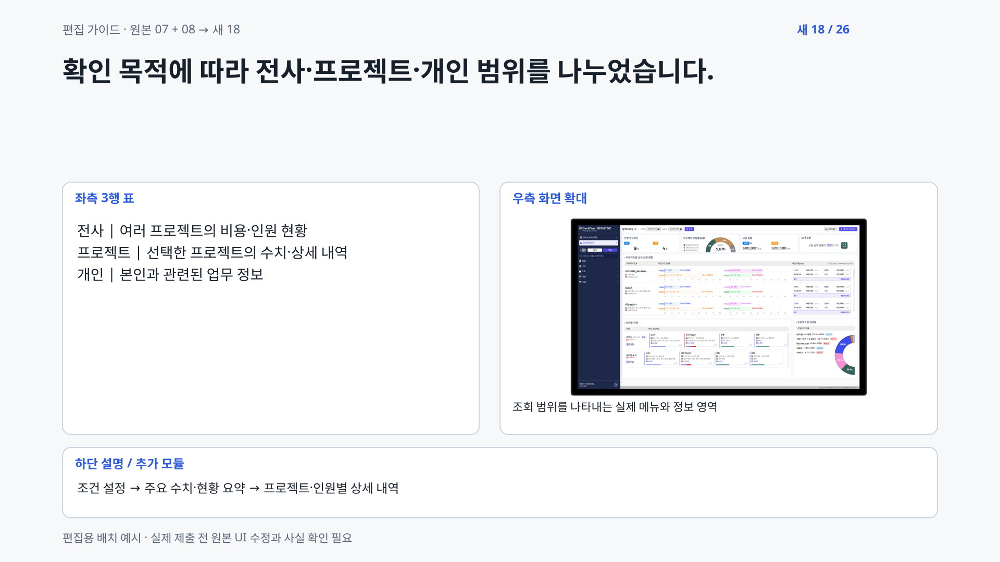
| 정확한 위치 | 할 작업 | 그 위치의 교체 문구 |
|---|---|---|
| 상단 제목 | 같은 데이터도… 제목 유지/축약 | 확인 목적에 따라 전사·프로젝트·개인 범위를 나누었습니다. |
| 좌측 3행 표 | 원본 07 아이콘 카드 3개 삭제 | 전사 | 여러 프로젝트의 비용·인원 현황 프로젝트 | 선택한 프로젝트의 수치·상세 내역 개인 | 본인과 관련된 업무 정보 |
| 우측 화면 확대 | 범위에 대응하는 탭·메뉴만 확대 | 조회 범위를 나타내는 실제 메뉴와 정보 영역 |
| 하단 가로 흐름 | 원본 08 세로 단계 도식을 가로로 이동 | 조건 설정 → 주요 수치·현황 요약 → 프로젝트·인원별 상세 내역 |
이미지·배치: 범위 3개를 보여줄 실제 화면이 있으면 같은 크기 3장으로 비교. 없으면 표와 현재 캡처의 확인 가능한 메뉴만 대응. 원본에서 접근권한을 설계했다는 증거가 없으므로 권한 매트릭스는 만들지 않는다.
완료 기준: 조회 범위와 실제 화면 영역이 대응하고 메뉴 진입을 조회 실행이라고 부르지 않는다.
1920×1080 기준 좌표 보기
- 좌측 3행 표: x=120, y=350, w=800, h=485
- 우측 화면 확대: x=960, y=350, w=840, h=485
- 하단 설명 / 추가 모듈: x=120, y=860, w=1680, h=135
한 모듈의 여러 문장은 같은 의미 단위다. 긴 문장은 원본 디자인에서 줄바꿈과 영역 크기를 조정한다. 배치도는 요약 예시이고 위 표가 교체 원고다.
새 19 · ERP: 구현 기준과 산출물 상태

| 정확한 위치 | 할 작업 | 그 위치의 교체 문구 |
|---|---|---|
| 상단 제목 | 오래 확인하는…/상태 표현과… 두 제목 통합 | 주요 수치·초과 상태의 기준을 공유하고 웹 UI를 퍼블리싱했습니다. |
| 좌측 부분 확대 | 원본 09 작은 UI 3장과 원본 10 수치 카드만 추출 | 중립색 배경 / 활성 메뉴 강조 / 주요 합계 강조 |
| 중앙 기준 표 | 원본 10 04·05·06 번호 제거 | 예시 투입시간: 9/8h 초과 상태: 초과근무 1시간 활성 메뉴: 현재 선택한 범위 표시 |
| 우측 협업 범위 | 업무 검토 모달 코드 캡처 삭제 | 상태 색상·수치 강조·요소 간격을 구현 기준으로 정리해 개발자와 공유했습니다. |
| 하단 주석 | 시각 피로/속도 개선 성과 삭제 | 9/8h와 초과 1시간은 화면의 예시값이며 효과 측정값이 아닙니다. |
| 하단 산출물/상태 | 원본 12 결과를 이 페이지로 병합 | 조회 범위·대시보드 UI·HTML/CSS/SCSS 퍼블리싱. 제공 형식이 PDF로 변경되어 웹 설계안은 최종 사용되지 않았습니다. |
이미지·배치: 원본 10 코드 캡처=(1454,839,318,129)는 제외. 같은 ERP의 주석/규칙/전달 자료 한 건이 있으면 우측에 삽입. 없으면 관련 없는 코드를 넣는 대신 확인된 공유 범위 문장과 실제 UI 확대를 사용. 초록색 초기안이 없으면 이전/개선안 비교를 새로 만들지 않는다. 원본 12의 결과/미사용 상태를 하단에 병합해 별도 회고 페이지를 없앤다.
완료 기준: 그래프는 프로젝트 진행률이 아닌 투입시간으로 설명하고 코드의 프로젝트 출처가 일치한다.
추가 확인: 정확한 픽셀/색상값/기준 정책은 실제 디자인 또는 코드에 있는 것만 적는다.
1920×1080 기준 좌표 보기
- 실제 UI 확대: x=120, y=350, w=540, h=540
- 수치와 상태: x=690, y=350, w=540, h=540
- 개발 전달 범위: x=1260, y=350, w=540, h=540
한 모듈의 여러 문장은 같은 의미 단위다. 긴 문장은 원본 디자인에서 줄바꿈과 영역 크기를 조정한다. 배치도는 요약 예시이고 위 표가 교체 원고다.
새 20 · 공통 UI 기준: 개요
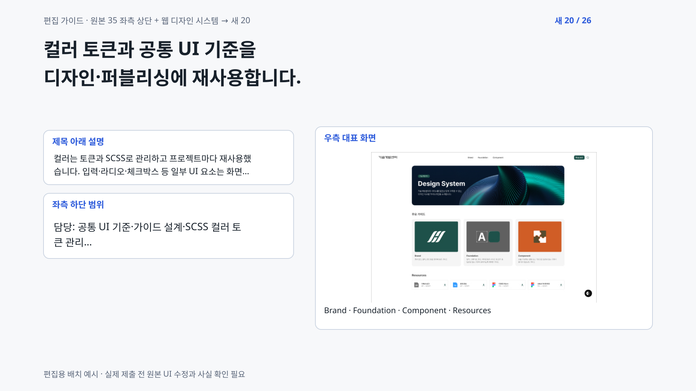
| 정확한 위치 | 할 작업 | 그 위치의 교체 문구 |
|---|---|---|
| 좌측 제목 | 35 디자인 시스템 카드 제목을 독립 사례 제목으로 확장 | 컬러 토큰과 공통 UI 기준을 디자인·퍼블리싱에 재사용합니다. |
| 제목 아래 설명 | 카드의 작은 본문을 2줄로 확장 | 컬러는 토큰과 SCSS로 관리하고 프로젝트마다 재사용했습니다. 입력·라디오·체크박스 등 일부 UI 요소는 화면에 맞춰 크기를 조정해 사용했습니다. |
| 좌측 하단 범위 | 웹 자료에서 확인되는 범위만 추가 | 담당: 공통 UI 기준·가이드 설계·SCSS 컬러 토큰 관리 사용: 디자이너의 디자인·프론트 작업 범위: 컬러와 일부 UI 요소의 실제 재사용 |
| 우측 대표 화면 | 35의 기울어진 목업을 실제 정면 화면으로 교체 | Brand · Foundation · Component · Resources |
이미지·배치: 원본 35의 작은 디자인 시스템 카드에서 실제 가이드 홈과 공통 기준을 꺼낸다. 핵심은 디자이너의 컬러 토큰·SCSS 재사용이다. 개발자 채택이나 조직 전체의 일괄 운영 경험으로 소개하지 않는다.
완료 기준: 컬러 토큰·SCSS와 일부 UI 요소의 재사용 범위를 구체적으로 설명하고 개발자 채택/전체 운영으로 확장하지 않는다.
추가 확인: SCSS 토큰 파일과 적용 스타일 1건, 본인 제작한 요소의 정확한 범위를 확보하면 근거를 보강할 수 있다. Figma Variables를 사용했다는 뜻으로 확장하지 않는다.
1920×1080 기준 좌표 보기
- 제목 아래 설명: x=120, y=360, w=690, h=150
- 좌측 하단 범위: x=120, y=534, w=690, h=180
- 우측 대표 화면/보조 영역: x=870, y=350, w=930, h=560
한 모듈의 여러 문장은 같은 의미 단위다. 긴 문장은 원본 디자인에서 줄바꿈과 영역 크기를 조정한다. 배치도는 요약 예시이고 위 표가 교체 원고다.
새 21 · 공통 UI 기준: 컬러 토큰·SCSS
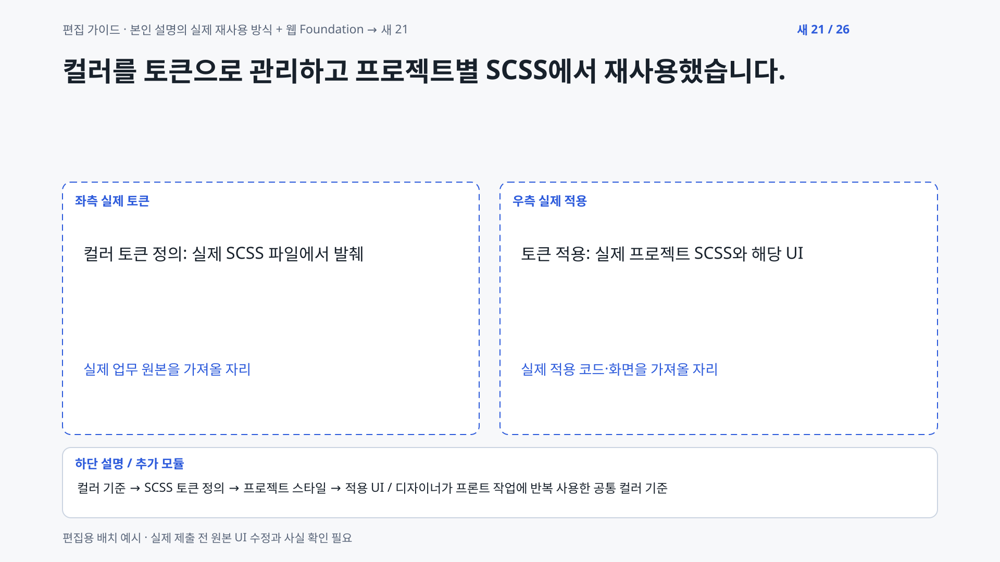
| 정확한 위치 | 할 작업 | 그 위치의 교체 문구 |
|---|---|---|
| 상단 제목 | 신규 페이지 | 컬러를 토큰으로 관리하고 프로젝트별 SCSS에서 재사용했습니다. |
| 좌측 실제 토큰 | 실제 사용하는 컬러 토큰 정의 8–12줄을 가져옴 | 컬러 토큰 정의: 실제 SCSS 파일에서 발췌 |
| 우측 실제 적용 | 같은 토큰을 사용하는 프로젝트 스타일과 UI 1개를 가져옴 | 토큰 적용: 실제 프로젝트 SCSS와 해당 UI |
| 하단 흐름 | 토큰이 화면까지 이어지는 관계 표시 | 컬러 기준 → SCSS 토큰 정의 → 프로젝트 스타일 → 적용 UI |
| 하단 사용 범위 | 실제 사용 대상과 범위 명시 | 디자이너가 프론트 작업에 반복 사용한 공통 컬러 기준 |
이미지·배치: 실제 코드 캡처 2개와 해당 UI 1개가 필요하다. 캡처는 같은 토큰 이름을 번호로 연결하고 8–12줄만 보이게 한다. 실제 파일이 아직 없으므로 배치도는 자료 자리만 표시한다. 포트폴리오 사이트의 색상 코드를 업무용 디자인 시스템 증거로 대신 쓰지 않는다.
완료 기준: 실제 변수명·정의·적용 화면이 연결되고 임의 색상값을 과거 기준처럼 넣지 않는다.
추가 확인: 필수 보강: SCSS 컬러 토큰 파일과 프로젝트 적용 1건. 원본 코드가 없으면 실제 재사용 사실과 가이드 화면까지만 제시하며 예시 코드는 “설명용 재구성”으로 표시.
1920×1080 기준 좌표 보기
- 좌측 실제 토큰: x=120, y=350, w=800, h=485
- 우측 실제 적용: x=960, y=350, w=840, h=485
- 하단 설명 / 추가 모듈: x=120, y=860, w=1680, h=135
한 모듈의 여러 문장은 같은 의미 단위다. 긴 문장은 원본 디자인에서 줄바꿈과 영역 크기를 조정한다. 배치도는 요약 예시이고 위 표가 교체 원고다.
새 22 · 공통 UI 기준: 요소 재사용
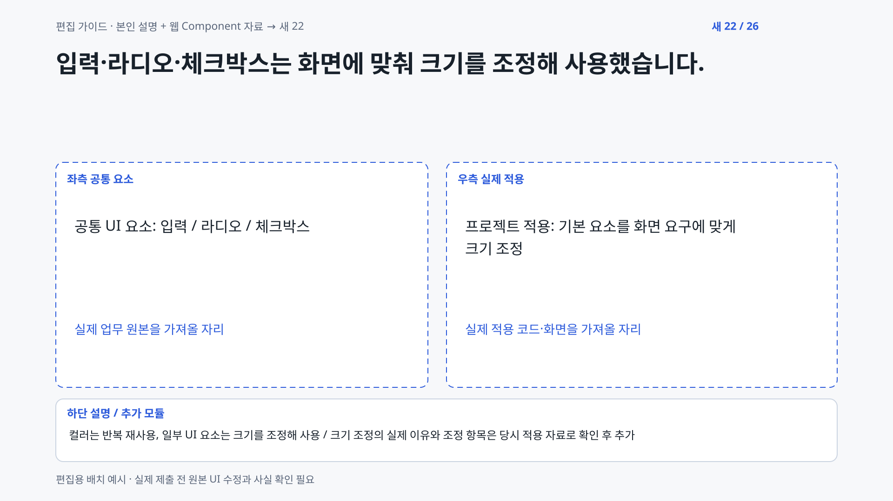
| 정확한 위치 | 할 작업 | 그 위치의 교체 문구 |
|---|---|---|
| 상단 제목 | 신규 페이지 | 입력·라디오·체크박스는 화면에 맞춰 크기를 조정해 사용했습니다. |
| 좌측 공통 요소 | 본인이 만든 입력·라디오·체크박스 원본을 가져옴 | 공통 UI 요소: 입력 / 라디오 / 체크박스 |
| 우측 실제 적용 | 같은 요소를 사용한 실제 프로젝트 영역을 가져옴 | 프로젝트 적용: 기본 요소를 화면 요구에 맞게 크기 조정 |
| 하단 적용 범위 | 실제 사용을 구체적으로 한정 | 컬러는 반복 재사용, 일부 UI 요소는 크기를 조정해 사용 |
| 하단 결정 설명 | 규격 일괄 강제보다 실제 조정 이유 한 건 | 크기 조정의 실제 이유와 조정 항목은 당시 적용 자료로 확인 후 추가 |
이미지·배치: 기본 요소와 실제 적용 영역을 같은 크기/같은 상태로 비교하고 바꾼 높이·패딩·너비를 실제 수치로만 표시. 현재 Search Bar 가이드로는 검색 입력 상태를 보여줄 수 있으나 라디오·체크박스 적용까지 증명되지는 않는다. 없는 화면은 자료 자리로 남기고 원본을 확보한다.
완료 기준: 가이드 전체를 모든 디자이너/개발자가 일괄 사용했다는 표현 없이 본인이 재사용한 부분을 보여준다.
추가 확인: 기본 요소 export와 실제 적용 UI 1건 확보. 적용 증거가 없으면 이 페이지를 가이드의 자료 구조로 바꾸고 재사용 사실은 개요 한 줄로 유지한다.
1920×1080 기준 좌표 보기
- 좌측 공통 요소: x=120, y=350, w=800, h=485
- 우측 실제 적용: x=960, y=350, w=840, h=485
- 하단 설명 / 추가 모듈: x=120, y=860, w=1680, h=135
한 모듈의 여러 문장은 같은 의미 단위다. 긴 문장은 원본 디자인에서 줄바꿈과 영역 크기를 조정한다. 배치도는 요약 예시이고 위 표가 교체 원고다.
새 23 · 공통 UI 웹 가이드: 상태와 사용 예시
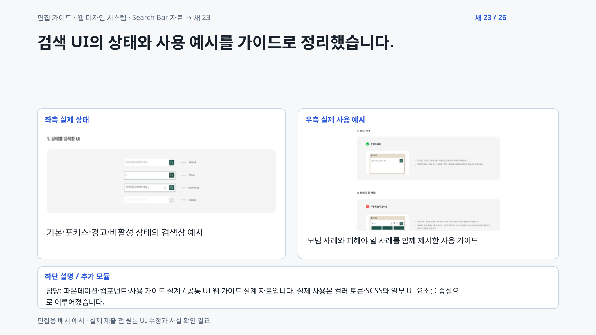
| 정확한 위치 | 할 작업 | 그 위치의 교체 문구 |
|---|---|---|
| 상단 제목 | 신규 페이지 | 검색 UI의 상태와 사용 예시를 가이드로 정리했습니다. |
| 좌측 실제 상태 | Search Bar의 상태별 검색창 UI 영역 확대 | 기본·포커스·경고·비활성 상태의 검색창 예시 |
| 우측 실제 사용 예시 | 같은 Search Bar 가이드의 좋은/잘못된 예시 확대 | 모범 사례와 피해야 할 사례를 함께 제시한 사용 가이드 |
| 하단 본인 책임 | 웹 자료의 담당 범위를 한 줄로 기재 | 담당: 파운데이션·컴포넌트·사용 가이드 설계 |
| 하단 결과 범위 | 운영 수치 대신 산출물 상태 | 공통 UI 웹 가이드 설계 자료입니다. 실제 사용은 컬러 토큰·SCSS와 일부 UI 요소를 중심으로 이루어졌습니다. |
이미지·배치: 실제 추가 이미지의 Search Bar 영역을 사용한다. 1920×1080 기준 오른쪽 전체=(1335,86,503,725), 상태 예시=(1425,204,342,117), 사용 예시=(1425,524,342,240). 가이드 전체를 축소해 넣지 말고 두 영역을 나란히 확대한다. 현재 캡처의 작은 규칙 문구는 해독/추측해 옮기지 않고 고해상도 원본에서 정확히 가져온다.
완료 기준: 검색창의 실제 상태 및 사용 예시가 보이고 Figma 토큰/팀 채택을 자동으로 주장하지 않는다.
추가 확인: 가이드 상세는 이미지에서 확인했다. 정확한 규칙 문구·본인 담당 영역·고해상도 원본을 가져온다. 새 21·22의 SCSS/적용 자료와 역할이 다르므로 가이드 화면만으로 코드 재사용을 입증하지 않는다.
1920×1080 기준 좌표 보기
- 좌측 실제 상태: x=120, y=350, w=800, h=485
- 우측 실제 사용 예시: x=960, y=350, w=840, h=485
- 하단 설명 / 추가 모듈: x=120, y=860, w=1680, h=135
한 모듈의 여러 문장은 같은 의미 단위다. 긴 문장은 원본 디자인에서 줄바꿈과 영역 크기를 조정한다. 배치도는 요약 예시이고 위 표가 교체 원고다.
새 24 · 모바일 인트라넷: 팀 내 설계·퍼블리싱
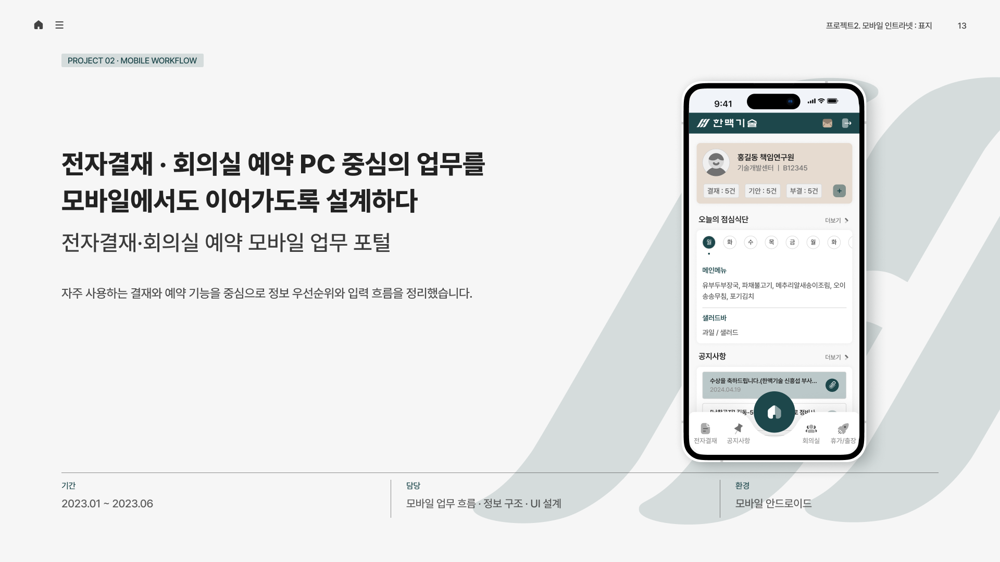
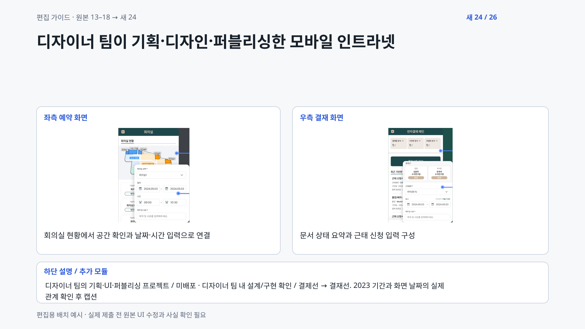
| 정확한 위치 | 할 작업 | 그 위치의 교체 문구 |
|---|---|---|
| 상단 제목 | 6쪽 사례를 1쪽으로 압축 | 디자이너 팀이 기획·디자인·퍼블리싱한 모바일 인트라넷 |
| 좌측 예약 화면 | 원본 16 현황/입력 영역만 추출 | 회의실 현황에서 공간 확인과 날짜·시간 입력으로 연결 |
| 우측 결재 화면 | 원본 17 문서 상태와 신청 입력 영역만 추출 | 문서 상태 요약과 근태 신청 입력 구성 |
| 하단 본인 참여 | 실제 팀 작업 범위를 명시 | 디자이너 팀의 기획·UI·퍼블리싱 프로젝트 |
| 하단 상태 | 배포·사용 효과를 쓰지 않음 | 미배포 · 디자이너 팀 내 설계/구현 확인 |
| 제출 전 UI 내부 수정 | 원본 17의 결제선과 기간/날짜 정리 | 결제선 → 결재선. 2023 기간과 화면 날짜의 실제 관계 확인 후 캡션 |
이미지·배치: 원본 14·15의 추상 카드, 18의 사용자 의견 반복과 성과 페이지를 제출본에서 제외. 원본 16/17은 모달 없는 정면 화면을 새로 export하고 두 핵심 과업만 나란히 배치. Android 표기에는 중립 프레임. 현재 배치도는 실제 원본 영역의 부분 확대이며 제출 전에 UI 오타/날짜를 수정해야 한다.
완료 기준: 사용자 서비스 출시 사례와 팀 내부 프로젝트가 구분되고 기획·디자인·퍼블리싱 경험이 남는다.
추가 확인: 개발자 협업/실사용자 피드백/사용자 평가 사례로 설명하지 않는다. 본인의 실제 기획·디자인·퍼블리싱 담당 부분은 추가로 구체화 가능.
1920×1080 기준 좌표 보기
- 좌측 예약 화면: x=120, y=350, w=800, h=485
- 우측 결재 화면: x=960, y=350, w=840, h=485
- 하단 설명 / 추가 모듈: x=120, y=860, w=1680, h=135
한 모듈의 여러 문장은 같은 의미 단위다. 긴 문장은 원본 디자인에서 줄바꿈과 영역 크기를 조정한다. 배치도는 요약 예시이고 위 표가 교체 원고다.
새 25 · 개인 칸반 프로토타입
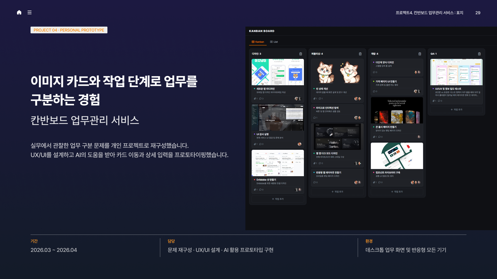
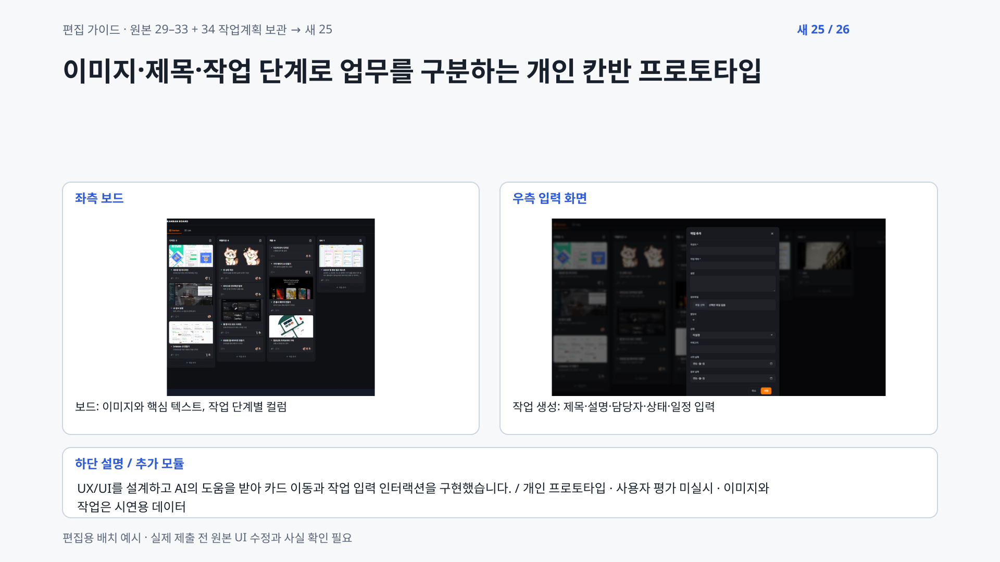
| 정확한 위치 | 할 작업 | 그 위치의 교체 문구 |
|---|---|---|
| 상단 제목 | 개인 프로토타입 상태를 제목에 명시 | 이미지·제목·작업 단계로 업무를 구분하는 개인 칸반 프로토타입 |
| 좌측 보드 | 원본 32 테스트 데이터 교체 후 재캡처 | 보드: 이미지와 핵심 텍스트, 작업 단계별 컬럼 |
| 우측 입력 화면 | 작업 추가 화면에 맞게 상세를 생성으로 교체 | 작업 생성: 제목·설명·담당자·상태·일정 입력 |
| 하단 구현 범위 | 원본 31 구현·검증 문구 교체 | UX/UI를 설계하고 AI의 도움을 받아 카드 이동과 작업 입력 인터랙션을 구현했습니다. |
| 하단 작은 주석 | 33·34 미검증 반복 통합 | 개인 프로토타입 · 사용자 평가 미실시 · 이미지와 작업은 시연용 데이터 |
이미지·배치: 보드/생성 화면 각 700px 폭. test:1·sss·ddddd → 의미 있는 시연 데이터: “회의실 예약 UI”, “결재선 문구 수정”, “입력 오류 검토” 등. 샘플 이름 교체일 뿐 실제 업무성과 아님. 원본 30 초기안과 31 코드/과정은 제출본에서 제외하고 면접 부록에 보존.
완료 기준: 작업 생성과 기존 작업 편집을 혼동하지 않고 동작은 실제 확인한 기능만 제시한다.
추가 확인: 기존 PNG는 테스트 데이터가 남아 있어 바로 제출할 수 없다. 실행 앱에서 데이터 교체 후 동일 상태 재캡처 필요.
1920×1080 기준 좌표 보기
- 좌측 보드: x=120, y=350, w=800, h=485
- 우측 입력 화면: x=960, y=350, w=840, h=485
- 하단 설명 / 추가 모듈: x=120, y=860, w=1680, h=135
한 모듈의 여러 문장은 같은 의미 단위다. 긴 문장은 원본 디자인에서 줄바꿈과 영역 크기를 조정한다. 배치도는 요약 예시이고 위 표가 교체 원고다.
새 26 · 연락처
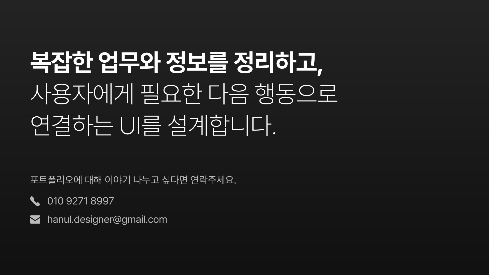
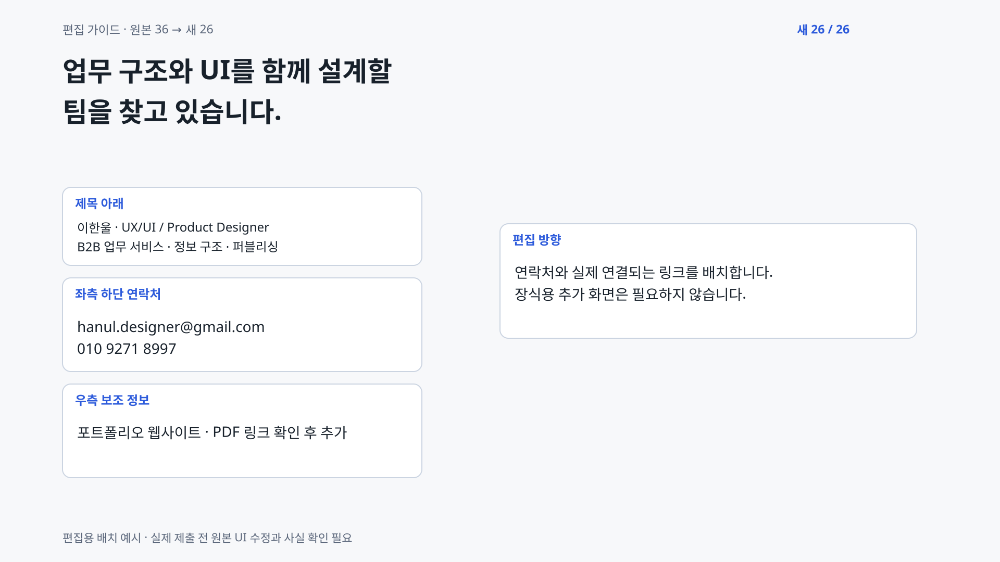
| 정확한 위치 | 할 작업 | 그 위치의 교체 문구 |
|---|---|---|
| 상단 큰 제목 | 현재 3줄 추상 소개 교체 | 업무 구조와 UI를 함께 설계할 팀을 찾고 있습니다. |
| 제목 아래 | 앞의 소개 반복 제거 | 이한울 · UX/UI / Product Designer B2B 업무 서비스 · 정보 구조 · 퍼블리싱 |
| 좌측 하단 연락처 | 기존 연락처 유지 | hanul.designer@gmail.com 010 9271 8997 |
| 우측 보조 정보 | 선택 사항 | 포트폴리오 웹사이트 · PDF 링크 확인 후 추가 |
이미지·배치: 배경 단색. QR은 실제 공개 주소 연결 확인 후 사용. 메일·전화는 PDF 링크를 설정하고 마지막 export에서 테스트.
완료 기준: 클릭 가능한 메일과 실제 열리는 웹 링크를 확인한다.
1920×1080 기준 좌표 보기
- 제목 아래: x=120, y=360, w=690, h=150
- 좌측 하단 연락처: x=120, y=534, w=690, h=180
- 우측 보조 정보: x=120, y=738, w=690, h=180
- 우측 대표 화면/보조 영역: x=870, y=350, w=930, h=560
한 모듈의 여러 문장은 같은 의미 단위다. 긴 문장은 원본 디자인에서 줄바꿈과 영역 크기를 조정한다. 배치도는 요약 예시이고 위 표가 교체 원고다.
원본 36쪽 전체 대응표 펼치기
| 원본 | 현재 페이지 | 새 위치 | 정확한 부분 | 실행 |
|---|---|---|---|---|
| 01 | 표지 | 01 | 중앙 소개 3줄·노란 강조·보라 배경 | 큰 제목/소개/실제 UI 1장으로 교체 |
| 02 | 경력 | 02 | 상단 소개·좌측 경력 bullet·우측 스킬 | 본문 대비 높임, 업무 3줄, 확인 안 된 성과 보류 |
| 03 | 목차 | 03 | 4개 장치 목업·세부 페이지 목록 | 통합 플랫폼/TBM/ERP/공통 UI 기준 4행 + 새 범위로 교체 |
| 04 | ERP 표지 | 16 | 좌측 제목·본문·하단 정보 | 미사용 상태 추가, 세 번째 실무 사례로 이동 |
| 05 | ERP 개요 | 16·17·19 | 문제/진행결과 카드·우측 중복 화면 | 상태는 표지/결과, 문제는 비교 페이지로; 단독 페이지 삭제 |
| 06 | ERP 설계 과제 | 17 | 3개 가로 긴 카드 | 원자료–UI의 번호 대응으로 변환; 단독 페이지 삭제 |
| 07 | ERP 조회 범위 | 18 | 하단 큰 아이콘 카드 3개 | 3행 표와 실제 범위 메뉴 확대 |
| 08 | ERP 정보 구조 | 18 | 중앙 세로 4단계 | 가로 조회 흐름으로 병합; 단독 페이지 삭제 |
| 09 | ERP 시각 우선순위 | 19 | 긴 제목·3개 작은 UI 카드 | 배경/활성/합계 부분 확대와 기준 표 |
| 10 | ERP 구현 기준 | 19 | 04·05·06 긴 카드와 우측 모달 코드 | 예시 투입시간 확대, ERP 관련성 불명 코드 제외 |
| 11 | ERP 원자료 비교 | 17 | 원장과 UI·하단 미사용 주석 | 확대·익명화·번호 연결; 핵심 증거로 유지 |
| 12 | ERP 회고 | 19 | 3개 회고 카드 | 산출물/미사용 상태를 구현 기준 페이지 하단에 병합 |
| 13 | 모바일 표지 | 24 | 아이폰 프레임·하단 환경·제목 | 미배포·디자이너 팀 기획/디자인/퍼블리싱으로 명시; 별도 표지 삭제 |
| 14 | 모바일 설계 과제 | 24 | 기능 카드 2개와 하단 한 줄 | 필요한 흐름 설명만 24에 추출. 사용자 피드백/운영 성과 표현 제외; 단독 페이지 삭제 |
| 15 | 모바일 설계 방향 | 24 | 좌측 단계/우측 추상 카드 4개 | 필요한 흐름 설명만 24에 추출. 사용자 피드백/운영 성과 표현 제외; 단독 페이지 삭제 |
| 16 | 회의실 예약 | 24 | PC 축소 화면·겹친 입력 모달·기능1/2 | PC/현황/입력 부분 확대 3열 |
| 17 | 전자결재 | 24 | 우측 결제선·제목·기능1/2 | 결재선 직접 수정, 문서 상태/근태 신청으로 설명 제한 |
| 18 | 모바일 결과 | 24 | 6개 결과/회고 카드 | 필요한 흐름 설명만 24에 추출. 사용자 피드백/운영 성과 표현 제외; 단독 페이지 삭제 |
| 19 | 플랫폼 표지 | 04 | 긴 제목·모니터·하단 정보 | 대표 사례로 이동, 평면 UI·배포 후 실제 사용 명시 |
| 20 | 플랫폼 문제 | 05 | 3개 긴 카드 | 파일 근거와 사용자 목적 표로 통합 |
| 21 | 플랫폼 사용자 | 05 | 큰 사용자 카드 3개 | 역할/확인 목적 표로 교체; 단독 페이지 삭제 |
| 22 | 플랫폼 IA | 06 | 문제01/02/03 카드 전체 | 실제 공통 메뉴 분류+메뉴 확대 화면 |
| 23 | 지도 UX | 07 | 겹친 노트북 목업·우측 추상 카드 | 정면 화면 1장에 지도/메뉴/자료 목록 번호 |
| 24 | 자료 통합 | 09 | 파일/4개 분류/작은 UI | 대표 자료 유형→관련 메뉴→화면, 기술 책임 분리 |
| 25 | 메뉴 비교 | 08 | 제목·3개 이미지 하단·선택 기준 | 원본 비교 유지, 메뉴 확대와 선택 이유 추가 |
| 26 | 탐색 구조 | 06·10 | Before/After/담당 카드 | IA/결과로 담당 분산; 단독 페이지 삭제 |
| 27 | 정보 위계 | 07 | 기울어진 화면·3개 추상 설명 | 탐색 화면의 번호 설명으로 병합; 단독 페이지 삭제 |
| 28 | 플랫폼 결과 | 10 | 85.6점 큰 제목·4개 카드 | 산출물/활용/협업 우선, 점수 증빙 후 각주 |
| 29 | 칸반 표지 | 25 | 제목·표지 메타 | 개인 프로토타입으로 명시; 별도 표지 삭제 |
| 30 | 칸반 과제 | 25·면접부록 | 초기안·해결안이 적힌 문제 정의 | 문제/해결 설명 1줄씩만 추출, 초기안 부록 보존 |
| 31 | 칸반 과정 | 25·면접부록 | 구현·검증·잘못 대응된 사진/코드 | 프로토타입 구현으로 수정, 코드는 부록으로 |
| 32 | 칸반 화면 | 25 | 왼쪽 test/sss·오른쪽 작업 상세 설명 | 시연 데이터 교체 재캡처, 작업 생성으로 명칭 일치 |
| 33 | 칸반 회고 | 25 | 구현 흐름·후속 확인 카드 | 구현 범위+한계 1줄로 통합 |
| 34 | 칸반 검증 계획 | 작업 계획·면접부록 | 6개 검증 카드 | 제출본 단독 페이지 제외; 10월 후속 테스트 계획으로 보존 |
| 35 | 추가 경험 | 11–15·20–23 | 디자인 시스템/TBM/반려동물/SkyAutoNet | TBM은 배포 실무 5쪽, 공통 UI 기준은 컬러 토큰/SCSS/부분 재사용 4쪽으로 확장. 나머지 별도 버전 보존 |
| 36 | 연락처 | 26 | 긴 소개·연락처 | 2줄 제목·직무·실제 링크로 정리 |